فصل ۱۷: تصمیمگیری پیچیده (Making Complex Decisions)
در این فصل، به مسائلِ محاسباتیِ مربوط به تصمیمگیری در محیطِ تصادفی میپردازیم. در حالی که فصل ۱۶ به مسائلِ تصمیمِ تکباره یا اپیزودیک میپرداخت، که در آنها مطلوبیتِ پیامدِ هر کنش بهخوبی شناختهشده بود، در اینجا با «مسائلِ تصمیمِ ترتیبی» (Sequential Decision Problems) سروکار داریم، که در آنها مطلوبیتِ عامل به توالیِ تصمیمها بستگی دارد. مسائلِ تصمیمِ ترتیبی مطلوبیتها، عدم قطعیت و حسکردن را در بر میگیرند، و مسائلِ جستجو و برنامهریزی را بهعنوانِ حالتهای خاص شامل میشوند. بخش ۱۷.۱ توضیح میدهد مسائلِ تصمیمِ ترتیبی چگونه تعریف میشوند، و بخش ۱۷.۲ روشهایی برای حلِ آنها برای تولیدِ رفتارهای مناسبِ محیطِ تصادفی توصیف میکند. بخش ۱۷.۳ مسائلِ «باندیتِ چندبازویی» (Multi-Armed Bandit) را پوشش میدهد، ردهای خاص و جذاب از مسائلِ تصمیمِ ترتیبی که در بافتهای بسیاری پدید میآیند. بخش ۱۷.۴ مسائلِ تصمیم را در محیطهای تا حدی قابل مشاهده کاوش میکند و بخش ۱۷.۵ توصیف میکند چگونه آنها را حل کنیم.
فرض کنیم عامل در محیطِ 4×3 نشاندادهشده در شکل ۱۷.۱(الف) قرار دارد. با شروع از حالتِ آغاز، باید در هر گامِ زمانی کنشی انتخاب کند. تعامل با محیط وقتی خاتمه مییابد که عامل به یکی از حالتهای هدف، که با +1 یا −1 علامتگذاری شدهاند، برسد. درست همانگونه که برای مسائلِ جستجو، کنشهای موجود برای عامل در هر حالت توسط ACTIONS(s) داده میشوند، که گاهی به A(s) مخفف میشود؛ در محیطِ 4×3، کنشها در هر حالت عبارتاند از بالا (Up)، پایین (Down)، چپ (Left) و راست (Right). فعلاً فرض میکنیم محیط کاملاً قابل مشاهده است، پس عامل همیشه میداند کجاست.
اگر محیط جبرگرایانه بود، راهحل آسان بود: [Up, Up, Right, Right, Right]. متأسفانه، محیط همیشه با این راهحل همراهی نمیکند، زیرا کنشها غیرقابلاعتمادند. مدلِ خاصِ حرکتِ تصادفی که اتخاذ میکنیم در شکل ۱۷.۱(ب) نشان داده شده. هر کنش با احتمالِ 0.8 به اثرِ موردنظر میرسد، اما بقیهٔ زمان، کنش عامل را در زاویهٔ قائمه نسبت به جهتِ موردنظر حرکت میدهد. علاوه بر این، اگر عامل به دیوار بخورد، در همان مربع میماند. برای نمونه، از مربعِ آغاز (1,1)، کنشِ Up عامل را با احتمالِ 0.8 به (1,2) میبرد، اما با احتمالِ 0.1 به راست به (2,1) میبرد، و با احتمالِ 0.1 به چپ میبرد، به دیوار میخورد و در (1,1) میماند. در چنین محیطی، توالیِ [Up,Up,Right,Right,Right] از دورِ مانع بالا میرود و با احتمالِ 0.8⁵ = 0.32768 به حالتِ هدف در (4,3) میرسد. همچنین شانسِ کوچکی برای رسیدنِ تصادفی به هدف از مسیرِ دیگر با احتمالِ 0.1⁴ × 0.8 وجود دارد، که در مجموع 0.32776 میشود. (همچنین تمرین ۱۷.MDPX را ببینید.)
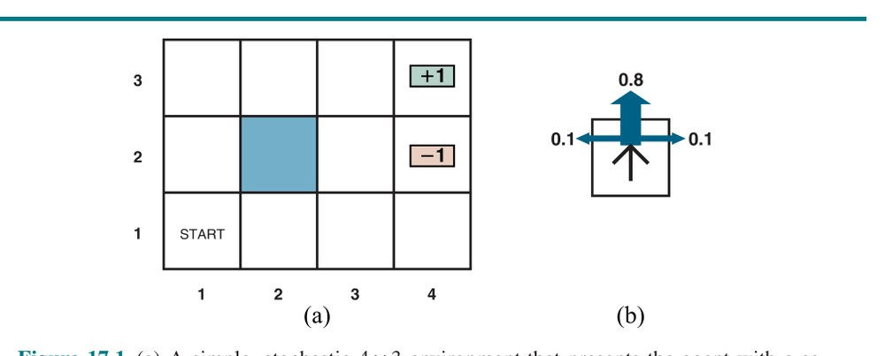
انتقالها به دو حالتِ پایانی بهترتیب پاداشِ +1 و −1 دارند، و همهٔ انتقالهای دیگر پاداشِ −0.04 دارند.
همانندِ فصل ۳، مدلِ انتقال (یا فقط «مدل»، وقتی معنا روشن است) پیامدِ هر کنش در هر حالت را توصیف میکند. در اینجا، پیامد تصادفی است، پس P(s′|s,a) را برای احتمالِ رسیدن به حالتِ s′ اگر کنشِ a در حالتِ s انجام شود مینویسیم. (برخی نویسندگان T(s,a,s′) را برای مدلِ انتقال مینویسند.) فرض میکنیم انتقالها مارکوفیاند: احتمالِ رسیدن به s′ از s فقط به s بستگی دارد، نه به تاریخچهٔ حالتهای زودتر.
برای کاملکردنِ تعریفِ محیطِ تکلیف، باید تابعِ مطلوبیت را برای عامل مشخص کنیم. چون مسئلهٔ تصمیم ترتیبی است، تابعِ مطلوبیت به توالیِ حالتها و کنشها—یک «تاریخچهٔ محیط» (Environment History)—بستگی خواهد داشت، نه به حالتِ تکی.
بعداً در این بخش ماهیتِ توابعِ مطلوبیت روی تاریخچهها را بررسی میکنیم؛ فعلاً صرفاً مقرر میکنیم برای هر انتقال از s به s′ از طریقِ کنشِ a، عامل «پاداشِ» (Reward) R(s,a,s′) دریافت میکند. پاداشها میتوانند مثبت یا منفی باشند، اما با ±Rmax کراندارند.¹ برای مثالِ خاصِ ما، پاداش −0.04 برای همهٔ انتقالهاست بهجزِ آنهایی که وارد حالتهای پایانی میشوند (که پاداشهای +1 و −1 دارند). مطلوبیتِ تاریخچهٔ محیط فعلاً (فقط فعلاً) جمعِ پاداشهای دریافتشده است. برای نمونه، اگر عامل پس از ۱۰ گام به حالتِ +1 برسد، مطلوبیتِ کلش (9 × −0.04) + 1 = 0.64 خواهد بود. پاداشِ منفیِ −0.04 به عامل انگیزه میدهد سریع به (4,3) برسد، پس محیطِ ما تعمیمِ تصادفیِ مسائلِ جستجویِ فصل ۳ است. راهِ دیگرِ بیانِ این موضوع این است که عامل از زندگی (حضور) در این محیط لذت نمیبرد و بنابراین میخواهد هرچه زودتر بیرون برود.
بهطورِ خلاصه: مسئلهٔ تصمیمِ ترتیبی برای محیطِ کاملاً قابل مشاهدهٔ تصادفی با مدلِ انتقالِ مارکوفی و پاداشهای افزایشی، «فرایندِ تصمیمِ مارکوف» (Markov Decision Process) یا MDP نامیده میشود، و شاملِ مجموعهای از حالتها (با حالتِ اولیهٔ s0)؛ مجموعهای ACTIONS(s) از کنشها در هر حالت؛ مدلِ انتقالِ P(s′|s,a)؛ و تابعِ پاداشِ R(s,a,s′) است. روشهای حلِ MDPها معمولاً از «برنامهنویسیِ پویا» (Dynamic Programming) استفاده میکنند: سادهکردنِ مسئله با شکستنِ بازگشتیِ آن به قطعاتِ کوچکتر و بهخاطرسپاریِ راهحلهای بهینهٔ قطعات.
پرسشِ بعدی این است که راهحلِ مسئله چه شکلی است؟ هیچ توالیِ کنشِ ثابتی نمیتواند مسئله را حل کند، زیرا عامل ممکن است به حالتی غیر از هدف برسد. بنابراین، راهحل باید مشخص کند عامل برای هر حالتی که ممکن است به آن برسد چه باید بکند. راهحلی از این نوع «سیاست» (Policy) نامیده میشود. مرسوم است سیاست را با π نشان دهیم، و π(s) کنشی است که سیاستِ π برای حالتِ s توصیه میکند. مهم نیست پیامدِ کنش چه باشد، حالتِ حاصل در سیاست خواهد بود و عامل خواهد دانست بعداً چه کند.
هر بار که سیاستِ معینی با شروع از حالتِ اولیه اجرا شود، ماهیتِ تصادفیِ محیط ممکن است به تاریخچهٔ محیطِ متفاوتی منتهی شود. کیفیتِ سیاست بنابراین با مطلوبیتِ موردانتظارِ تاریخچههای محیطِ ممکنِ تولیدشده توسط آن سیاست اندازهگیری میشود. «سیاستِ بهینه» (Optimal Policy) سیاستی است که بالاترین مطلوبیتِ موردانتظار را میدهد. از π* برای نشاندادنِ سیاستِ بهینه استفاده میکنیم. با π*، عامل با مشورت با حسگذارِهٔ کنونیاش، که حالتِ کنونیِ s را به او میگوید، و سپس اجرایِ کنشِ π*(s)، تصمیم میگیرد چه کند. سیاست، تابعِ عامل را بهصورتِ صریح بازنمایی میکند و بنابراین توصیفی از عاملِ بازتابیِ ساده است، که از اطلاعاتِ استفادهشده برای عاملِ مبتنی بر مطلوبیت محاسبه شده.
سیاستهای بهینه برای جهانِ شکل ۱۷.۱ در شکل ۱۷.۲(الف) نشان داده شدهاند. دو سیاست هست، زیرا عامل دقیقاً میانِ رفتنِ به چپ و رفتنِ به بالا از (3,1) بیتفاوت است: رفتن به چپ امنتر اما طولانیتر است، در حالی که رفتن به بالا سریعتر است اما ریسکِ افتادنِ تصادفی در (4,2) را دارد. بهطورِ کلی اغلب چند سیاستِ بهینه وجود خواهد داشت.
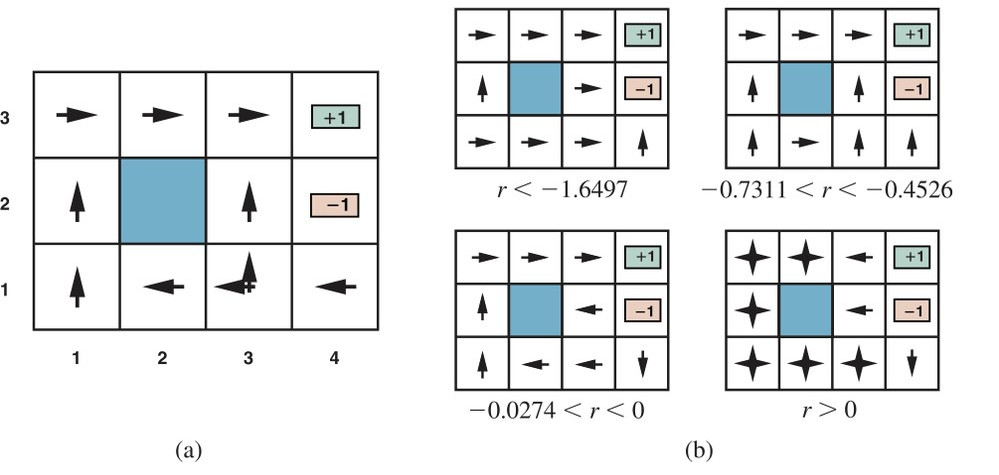
توازنِ ریسک و پاداش بسته به مقدارِ r = R(s,a,s′) برای انتقالهای میانِ حالتهای غیرپایانی تغییر میکند. سیاستهای نشاندادهشده در شکل ۱۷.۲(الف) برای −0.0850 < r < −0.0273 بهینهاند. شکل ۱۷.۲(ب) سیاستهای بهینه را برای چهار بازهٔ دیگرِ r نشان میدهد. وقتی r < −1.6497، زندگی چنان دردناک است که عامل مستقیم به نزدیکترین خروجی میرود، حتی اگر خروجی −1 ارزش داشته باشد. وقتی −0.7311 < r < −0.4526، زندگی کاملاً ناخوشایند است؛ عامل کوتاهترین مسیر را به حالتِ +1 از (2,1)، (3,1) و (3,2) میگیرد، اما از (4,1) هزینهٔ رسیدن به +1 چنان بالاست که عامل ترجیح میدهد مستقیم به −1 شیرجه بزند. وقتی زندگی فقط اندکی تیره است (−0.0274 < r < 0)، سیاستِ بهینه هیچ ریسکی نمیکند. در (4,1) و (3,2)، عامل مستقیماً از حالتِ −1 دور میشود تا نتواند تصادفاً در آن بیفتد، حتی اگر این به معنای کوبیدنِ چندبارهٔ سرش به دیوار باشد. سرانجام، اگر r > 0، زندگی واقعاً لذتبخش است و عامل از هر دو خروجی اجتناب میکند. تا زمانی که کنشها در (4,1)، (3,2) و (3,3) همانگونهاند که نشان داده شده، هر سیاستی بهینه است و عامل پاداشِ کلِ نامتناهی میگیرد، زیرا هرگز وارد حالتِ پایانی نمیشود. معلوم میشود در مجموع نه سیاستِ بهینه برای بازههای مختلفِ r هست؛ تمرین ۱۷.THRC از شما میخواهد آنها را بیابید.
معرفیِ عدم قطعیت، MDPها را به دنیای واقعی نزدیکتر از مسائلِ جستجویِ جبرگرایانه میکند. به همین دلیل، MDPها در چند حوزه مطالعه شدهاند، از جملهِ هوش مصنوعی، تحقیق در عملیات، اقتصاد و نظریهٔ کنترل. دهها الگوریتمِ حل پیشنهاد شده که چندتایشان را در بخش ۱۷.۲ بحث میکنیم. اما نخست، تعریفهای مطلوبیتها، سیاستهای بهینه و مدلهای MDP را با جزئیاتِ بیشتر بیان میکنیم.
در مثالِ MDP در شکل ۱۷.۱، عملکردِ عامل با جمعِ پاداشهای انتقالهای تجربهشده اندازهگیری شد. این انتخابِ معیارِ عملکرد دلبخواه نیست، اما تنها امکان برای تابعِ مطلوبیت² روی تاریخچههای محیط نیست، که آن را Uh([s0,a0,s1,a1,...,sn]) مینویسیم.
نخستین پرسشی که باید پاسخ داد این است که آیا «افقِ متناهی» (Finite Horizon) هست یا «افقِ نامتناهی» (Infinite Horizon) برای تصمیمگیری. افقِ متناهی بدان معناست زمانِ ثابتِ N هست که پس از آن هیچچیز اهمیت ندارد—بازی تمام شده، به بیانِ دیگر. بدینترتیب، Uh([s0,a0,s1,a1,...,sN+k]) = Uh([s0,a0,s1,a1,...,sN]) برای همهٔ k > 0. برای نمونه، فرض کنیم عاملی در جهانِ 4×3 شکل ۱۷.۱ از (3,1) شروع میکند، و فرض کنیم N = 3. آنگاه، برای داشتنِ هر شانسی برای رسیدن به حالتِ +1، عامل باید مستقیم به سمتِ آن برود، و کنشِ بهینه رفتن به بالا است. از سوی دیگر، اگر N = 100، وقتِ فراوانی برای رفتنِ مسیرِ امن با رفتن به چپ هست. پس، با افقِ متناهی، کنشِ بهینه در حالتِ معین ممکن است به زمانِ باقیمانده بستگی داشته باشد. سیاستی که به زمان بستگی دارد «غیرایستا» (Nonstationary) نامیده میشود. از سوی دیگر، بدونِ محدودیتِ زمانیِ ثابت، دلیلی برای رفتارِ متفاوت در همان حالت در زمانهای متفاوت نیست. از این رو، کنشِ بهینه فقط به حالتِ کنونی بستگی دارد و سیاستِ بهینه «ایستا» (Stationary) است. سیاستهای حالتِ افقِ نامتناهی بنابراین از سیاستهای حالتِ افقِ متناهی سادهترند، و ما در این فصل عمدتاً با حالتِ افقِ نامتناهی سروکار داریم. (بعداً خواهیم دید برای محیطهای تا حدی قابل مشاهده، حالتِ افقِ نامتناهی چندان ساده نیست.) توجه کنید «افقِ نامتناهی» لزوماً به این معنا نیست همهٔ توالیهای حالت نامتناهیاند؛ فقط بدان معناست هیچ موعدِ ثابتی نیست. در MDP با افقِ نامتناهی که شاملِ حالتِ پایانی است، توالیهای حالتِ متناهی میتوانند باشند.
پرسشِ بعدی که باید تصمیم بگیریم این است که مطلوبیتِ توالیهای حالت را چگونه محاسبه کنیم. در سراسرِ این فصل، «پاداشهای افزایشیِ تنزیلشده» (Additive Discounted Rewards) را خواهیم داشت: مطلوبیتِ یک تاریخچه:
Uh([s0,a0,s1,a1,s2,...]) = R(s0,a0,s1) + γR(s1,a1,s2) + γ²R(s2,a2,s3) + ...که در آن «عاملِ تنزیل» (Discount Factor) γ عددی بین 0 و 1 است. عاملِ تنزیل ترجیحِ عامل را برای پاداشهای کنونی بر پاداشهای آینده توصیف میکند. وقتی γ نزدیکِ 0 است، پاداشهای در آیندهٔ دور بیاهمیت دیده میشوند. وقتی γ نزدیکِ 1 است، عامل مایلتر است برای پاداشهای بلندمدت صبر کند. وقتی γ دقیقاً 1 است، پاداشهای تنزیلشده به حالتِ خاصِ پاداشهای صرفاً افزایشی کاهش مییابند. توجه کنید افزایشیبودن بهصورتِ ضمنی در استفادهمان از تابعهای هزینهٔ مسیر در اکتشافیها استفاده شده. گزینهٔ سوم این است که توالیهای نامتناهی را بر حسبِ «پاداشِ میانگینِ» (Average Reward) بهدستآمده در هر گامِ زمانی مقایسه کنیم. فرض کنیم انتقالها به مربعِ (1,1) در جهانِ 4×3 پاداشِ 0.1 دارند، در حالی که انتقالها به سایر حالتهای غیرپایانی پاداشِ 0.01 دارند. آنگاه سیاستی که بهترین تلاشش را برای ماندن در (1,1) میکند، پاداشِ میانگینِ بالاتری از سیاستی خواهد داشت که جایِ دیگر میماند. پاداشِ میانگین معیارِ مفیدی برای برخی مسائل است، اما تحلیلِ الگوریتمهای پاداشِ میانگین پیچیده است.
پاداشهای افزایشیِ تنزیلشده کمترین دشواریها را در ارزیابیِ تاریخچهها ارائه میدهند، پس از این پس از آنها استفاده میکنیم.
پس از تصمیمگیری دربارهٔ اینکه مطلوبیتِ تاریخچهٔ معین جمعِ پاداشهای تنزیلشده است، میتوانیم سیاستها را با مقایسهٔ مطلوبیتهای موردانتظارِ بهدستآمده هنگام اجرایشان مقایسه کنیم. فرض میکنیم عامل در حالتِ اولیهٔ s است و St (متغیرِ تصادفی) را حالتی تعریف میکنیم که عامل هنگام اجرایِ سیاستِ خاصِ π در زمانِ t به آن میرسد. (بدیهی است، S0 = s، حالتی که عامل الان در آن است.) توزیعِ احتمال روی توالیهای حالتِ S1,S2,... توسط حالتِ اولیهٔ s، سیاستِ π و مدلِ انتقالِ محیط تعیین میشود.
مطلوبیتِ موردانتظارِ حاصل از اجرایِ π با شروع از s چنین داده میشود:
Uπ(s) = E[∑_{t=0}^{∞} γᵗ R(St, π(St), St+1)] (17.2)که در آن انتظارِ E نسبت به توزیعِ احتمال روی توالیهای حالتِ تعیینشده توسط s و π است. حالا، از میانِ همهٔ سیاستهایی که عامل میتواند با شروع از s انتخاب کند، یکی (یا بیشتر) مطلوبیتِ موردانتظارِ بالاتری از بقیه خواهد داشت. از π*s برای نشاندادنِ یکی از این سیاستها استفاده میکنیم:
π*s = argmax_π Uπ(s) (17.3)به یاد آورید π*s یک سیاست است، پس برای هر حالت کنشی توصیه میکند؛ ارتباطش با s بهطورِ خاص این است که وقتی s حالتِ شروع است سیاستِ بهینه است. پیامدِ قابلِتوجهِ استفاده از مطلوبیتهای تنزیلشده با افقِ نامتناهی این است که سیاستِ بهینه مستقل از حالتِ شروع است. (البته، توالیِ کنش مستقل نخواهد بود؛ به یاد آورید سیاست تابعی است که برای هر حالت کنشی مشخص میکند.) این واقعیت از نظرِ شهودی بدیهی به نظر میرسد: اگر سیاستِ π*a با شروع از a بهینه و سیاستِ π*b با شروع از b بهینه باشد، آنگاه وقتی به حالتِ سومی مانند c برسند، دلیلِ خوبی برای مخالفتِشان با یکدیگر، یا با π*c، دربارهٔ بعداً چهکردن نیست.³ پس میتوانیم بهسادگی π* را برای سیاستِ بهینه بنویسیم.
با این تعریف، مطلوبیتِ واقعیِ حالت صرفاً Uπ*(s) است—یعنی جمعِ موردانتظارِ پاداشهای تنزیلشده اگر عامل سیاستِ بهینه را اجرا کند. این را U(s) مینویسیم، همخوان با نمادِ استفادهشده در فصل ۱۶ برای مطلوبیتِ پیامد. شکل ۱۷.۳ مطلوبیتها را برای جهانِ 4×3 نشان میدهد. توجه کنید مطلوبیتها برای حالتهای نزدیکتر به خروجیِ +1 بالاترند، زیرا گامهای کمتری برای رسیدن به خروجی لازم است.
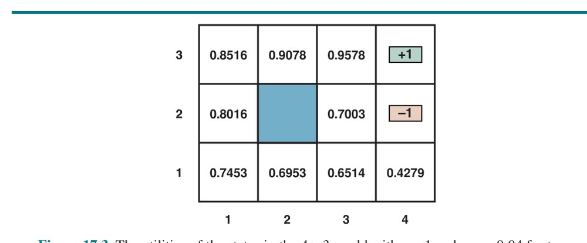
تابعِ مطلوبیتِ U(s) به عامل اجازه میدهد کنشها را با استفاده از اصلِ بیشینهٔ مطلوبیتِ موردانتظار از فصل ۱۶ انتخاب کند—یعنی کنشی را برگزیند که پاداشِ گامِ بعد بهعلاوهٔ مطلوبیتِ تنزیلشدهٔ موردانتظارِ حالتِ بعدی را بیشینه میکند:
π*(s) = argmax_{a∈A(s)} ∑s′ P(s′|s,a) [R(s,a,s′) + γU(s′)] (17.4)مطلوبیتِ حالت، U(s)، را بهعنوانِ جمعِ موردانتظارِ پاداشهای تنزیلشده از آن نقطه به بعد تعریف کردهایم. از این، نتیجه میشود رابطهٔ مستقیمی میانِ مطلوبیتِ حالت و مطلوبیتِ همسایههایش هست: مطلوبیتِ حالت، پاداشِ موردانتظارِ انتقالِ بعد بهعلاوهٔ مطلوبیتِ تنزیلشدهٔ حالتِ بعد است، با فرضِ اینکه عامل کنشِ بهینه را انتخاب کند. یعنی مطلوبیتِ حالت چنین داده میشود:
U(s) = max_{a∈A(s)} ∑s′ P(s′|s,a) [R(s,a,s′) + γU(s′)] (17.5)این «معادلهٔ بلمن» (Bellman Equation) نامیده میشود، به نامِ ریچارد بلمن (1957). مطلوبیتهای حالتها—تعریفشده توسط معادلهٔ (17.2) بهعنوانِ مطلوبیتِ موردانتظارِ توالیهای حالتِ بعدی—راهحلهای مجموعهٔ معادلههای بلمناند. در واقع، آنها راهحلهای یکتایند، چنانکه در بخش ۱۷.۲.۱ نشان میدهیم. به یکی از معادلههای بلمن برای جهانِ 4×3 نگاه کنیم. عبارتِ U(1,1) بهصورتِ زیر است:
max{
[0.8(−0.04+γU(1,2)) + 0.1(−0.04+γU(2,1)) + 0.1(−0.04+γU(1,1))], (بالا)
[0.9(−0.04+γU(1,1)) + 0.1(−0.04+γU(1,2))], (چپ)
[0.9(−0.04+γU(1,1)) + 0.1(−0.04+γU(2,1))], (پایین)
[0.8(−0.04+γU(2,1)) + 0.1(−0.04+γU(1,2)) + 0.1(−0.04+γU(1,1))] (راست)
}که در آن چهار عبارت بهترتیب با حرکتهای بالا، چپ، پایین و راست متناظرند. وقتی مقادیرِ شکل ۱۷.۳ را با γ = 1 جایگذاری میکنیم، درمییابیم بالا بهترین کنش است.
کمیتِ مهمِ دیگر «تابعِ کنش-مطلوبیت» یا «تابعِ Q» است: Q(s,a) مطلوبیتِ موردانتظارِ انجامِ کنشِ معین در حالتِ معین است. تابعِ Q به شیوهٔ بدیهی به مطلوبیتها مربوط است:
U(s) = max_a Q(s,a) (17.6)علاوه بر این، سیاستِ بهینه را میتوان از تابعِ Q چنین استخراج کرد:
π*(s) = argmax_a Q(s,a) (17.7)همچنین میتوانیم معادلهٔ بلمن را برای توابعِ Q توسعه دهیم، با یادآوریِ اینکه پاداشِ کلِ موردانتظارِ انجامِ کنش، پاداشِ بیواسطهاش بهعلاوهٔ مطلوبیتِ تنزیلشدهٔ حالتِ پیامد است، که بهنوبهٔ خود بر حسبِ تابعِ Q بیان میشود:
Q(s,a) = ∑s′ P(s′|s,a) [R(s,a,s′) + γ U(s′)]
= ∑s′ P(s′|s,a) [R(s,a,s′) + γ max_{a′} Q(s′,a′)] (17.8)حلِ معادلههای بلمن برای U (یا برای Q) آنچه برای یافتنِ سیاستِ بهینه نیاز داریم به ما میدهد. تابعِ Q بارها و بارها در الگوریتمهای حلِ MDPها ظاهر میشود، پس از تعریفِ زیر استفاده میکنیم:
function Q-VALUE(mdp, s, a, U) returns a utility value
return ∑s′ P(s′|s,a) [R(s,a,s′) + γ U[s′]]فصل ۱۶ اشاره کرد مقیاسِ مطلوبیتها دلبخواه است: تبدیلِ خطی-آفین (Affine Transformation)، تصمیمِ بهینه را تغییر نمیدهد. میتوانیم U(s) را با U′(s) = mU(s) + b جایگزین کنیم، که در آن m و b ثابتهای دلخواه با m > 0 هستند. از تعریفِ مطلوبیتها بهعنوانِ جمعهای تنزیلشدهٔ پاداشها، بهآسانی دیده میشود تبدیلِ مشابهی از پاداشها سیاستِ بهینه را در MDP تغییر نمیدهد:
R′(s,a,s′) = mR(s,a,s′) + bاما معلوم میشود تجزیهٔ افزایشیِ مطلوبیتها به آزادیِ قابلِتوجهیِ بیشتری در تعریفِ پاداشها میانجامد. فرض کنیم Φ(s) هر تابعی از حالتِ s باشد. آنگاه، طبقِ «قضیهٔ شکلدهی» (Shaping Theorem)، تبدیلِ زیر سیاستِ بهینه را تغییر نمیدهد:
R′(s,a,s′) = R(s,a,s′) + γΦ(s′) − Φ(s) (17.9)برای نشاندادنِ درستبودنِ این، باید اثبات کنیم دو MDP، M و M′، سیاستهای بهینهٔ یکسانی دارند، تا زمانی که فقط در توابعِ پاداششان طبقِ معادلهٔ (17.9) تفاوت داشته باشند. از معادلهٔ بلمن برای Q شروع میکنیم، تابعِ Q برای MDPِ M:
Q(s,a) = ∑s′ P(s′|s,a) [R(s,a,s′) + γ max_{a′} Q(s′,a′)]حالا بگذارید Q′(s,a) = Q(s,a) − Φ(s) و آن را در این معادله جای کنیم؛ میگیریم:
Q′(s,a) + Φ(s) = ∑s′ P(s′|s,a) [R(s,a,s′) + γ max_{a′} (Q′(s′,a′) + Φ(s′))]که سپس بهصورتِ زیر ساده میشود:
Q′(s,a) = ∑s′ P(s′|s,a) [R(s,a,s′) + γΦ(s′) − Φ(s) + γ max_{a′} Q′(s′,a′)]
= ∑s′ P(s′|s,a) [R′(s,a,s′) + γ max_{a′} Q′(s′,a′)]به بیانِ دیگر، Q′(s,a) معادلهٔ بلمن را برای MDPِ M′ ارضا میکند. حالا میتوانیم سیاستِ بهینه را برای M′ با معادلهٔ (17.7) استخراج کنیم:
π*_M′(s) = argmax_a Q′(s,a) = argmax_a (Q(s,a) − Φ(s)) = argmax_a Q(s,a) = π*_M(s)تابعِ Φ(s) اغلب «پتانسیل» (Potential) نامیده میشود، به قیاس با پتانسیلِ الکتریکی (ولتاژ) که میدانهای الکتریکی را پدید میآورد. جملهٔ γΦ(s′) − Φ(s) بهعنوانِ گرادیانِ پتانسیل عمل میکند. بدینترتیب، اگر Φ(s) در حالتهایی که مطلوبیتِ بالاتری دارند مقدارِ بالاتری داشته باشد، افزودنِ γΦ(s′) − Φ(s) به پاداش، اثرِ هدایتِ عامل «سربالا» در مطلوبیت را دارد.
در نگاهِ نخست، ممکن است نسبتاً ضدشهود به نظر برسد که بتوانیم پاداش را بدینگونه بدونِ تغییرِ سیاستِ بهینه اصلاح کنیم. کمک میکند به یاد آوریم همهٔ سیاستها با تابعِ پاداشی که همهجا صفر است بهینهاند. این بدان معناست، طبقِ قضیهٔ شکلدهی، همهٔ سیاستها برای هر پاداشِ مبتنی بر پتانسیلِ بهصورتِ R(s,a,s′) = γΦ(s′) − Φ(s) بهینهاند. بهصورتِ شهودی، این به این دلیل است که با چنین پاداشی مهم نیست عامل از A به B از کدام راه برود. (این وقتی γ = 1 آسانتر دیده میشود: در طولِ هر مسیری جمعِ پاداشها به Φ(B) − Φ(A) فرو میریزد، پس همهٔ مسیرها بهیکسان خوباند.) پس افزودنِ پاداشِ مبتنی بر پتانسیل به هر پاداشِ دیگری نباید سیاستِ بهینه را تغییر دهد.
انعطافِ فراهمشده توسط قضیهٔ شکلدهی بدان معناست میتوانیم در واقع با مستقیمترکردنِ بازتابِ پاداشِ بیواسطه از آنچه عامل باید بکند، به عامل کمک کنیم. در واقع، اگر Φ(s) = U(s) بگذاریم، آنگاه سیاستِ حریصانهٔ πG نسبت به پاداشِ اصلاحشدهٔ R′ نیز سیاستِ بهینه است:
πG(s) = argmax_a ∑s′ P(s′|s,a) R′(s,a,s′)
= argmax_a ∑s′ P(s′|s,a) [R(s,a,s′) + γΦ(s′) − Φ(s)]
= argmax_a ∑s′ P(s′|s,a) [R(s,a,s′) + γU(s′) − U(s)]
= argmax_a ∑s′ P(s′|s,a) [R(s,a,s′) + γU(s′)]
= π*(s) (با معادلهٔ (17.4))البته، برای گذاشتنِ Φ(s) = U(s) باید U(s) را میدانستیم؛ پس ناهارِ مجانی نیست، اما همچنان ارزشِ قابلِتوجهی در تعریفِ تابعِ پاداشی هست که تا آنجا که ممکن است کمککننده است. این دقیقاً همان کاری است که مربیانِ حیوانات میکنند وقتی برای هر گام در توالیِ هدف، خوراکِ کوچکی به حیوان میدهند.
سادهترین راهِ بازنماییِ P(s′|s,a) و R(s,a,s′) با جدولهای سهبعدیِ بزرگِ اندازهٔ |S|²|A| است. این برای مسائلِ کوچک مانندِ جهانِ 4×3 خوب است، که برایش جدولها هر یک 11² × 4 = 484 درایه دارند. در برخی موارد، جدولها پراکندهاند—بیشترِ درایهها صفرند، زیرا هر حالتِ s فقط میتواند به شمارِ کرانداری از حالتهای s′ انتقال یابد—که بدان معناست جدولها اندازهٔ O(|S||A|) دارند. برای مسائلِ بزرگتر، حتی جدولهای پراکنده نیز بسیار بزرگاند.
درست همانگونه که در فصل ۱۶، جایی که شبکههای بیزی با گرههای کنش و مطلوبیت بسط داده شدند تا شبکههای تصمیم بسازند، میتوانیم MDPها را با بسطِ شبکههای بیزیِ پویا (DBNها، فصل ۱۴ را ببینید) با گرههای تصمیم، پاداش و مطلوبیت بازنمایی کنیم تا «شبکههای تصمیمِ پویا» (Dynamic Decision Networks) یا DDN بسازیم. DDNها در اصطلاحشناسیِ فصل ۲ بازنماییهای عاملیاند؛ آنها معمولاً مزیتِ پیچیدگیِ نمایی نسبت به بازنماییهای اتمی دارند و میتوانند مسائلِ دنیایِ واقعیِ کاملاً قابلِتوجهی را مدل کنند.
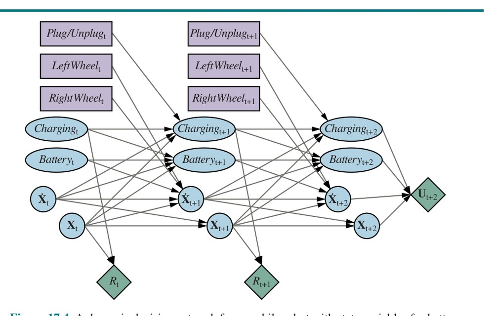
شکل ۱۷.۴، که بر DBN شکل ۱۴.۱۳(ب) (صفحهٔ ۴۸۶) مبتنی است، برخی عناصرِ مدلِ نسبتاً واقعگرایانه را برای رباتِ متحرکی نشان میدهد که میتواند خودش را شارژ کند. حالتِ St به چهار متغیرِ حالت تجزیه میشود:
فضایِ حالتِ MDP حاصلِ ضربِ دکارتیِ بازههای این چهار متغیر است. کنش حالا مجموعهای At از متغیرهای کنش است، شاملِ Plug/Unplug، که سه مقدار دارد (وصل، قطع و بیعمل)؛ LeftWheel برای توانِ فرستادهشده به چرخِ چپ؛ و RightWheel برای توانِ فرستادهشده به چرخِ راست. مجموعهٔ کنشهای MDP حاصلِ ضربِ دکارتیِ بازههای این سه متغیر است. توجه کنید هر متغیرِ کنش فقط بر زیرمجموعهای از متغیرهای حالت اثر میگذارد. مدلِ انتقالِ کلی، توزیعِ شرطیِ P(Xt+1|Xt,At) است، که میتوان آن را بهصورتِ حاصلِضربی از احتمالهای شرطی از DDN محاسبه کرد. پاداشِ اینجا متغیرِ تکی است که فقط به مکانِ X (برای، مثلاً، رسیدن به مقصد) و شارژ بستگی دارد، زیرا ربات باید هزینهٔ برقِ مصرفی را بپردازد؛ در این مدلِ خاص، پاداش به کنش یا حالتِ پیامد بستگی ندارد.
شبکهٔ شکل ۱۷.۴ برای سه گام در زمان گسترانده (باز) شده است. توجه کنید شبکه شاملِ گرههایی برای پاداشهای t، t+1 و t+2 است، اما مطلوبیت برای t+3. این به این دلیل است که عامل باید جمعِ (تنزیلشدهٔ) همهٔ پاداشهای آینده را بیشینه کند، و U(Xt+3) مطلوبیتِ حاصل از همهٔ پاداشها از t+3 به بعد را بازنمایی میکند. اگر تقریبِ اکتشافیای از U در دسترس باشد، میتوان آن را بدینگونه در بازنماییِ MDP گنجاند.
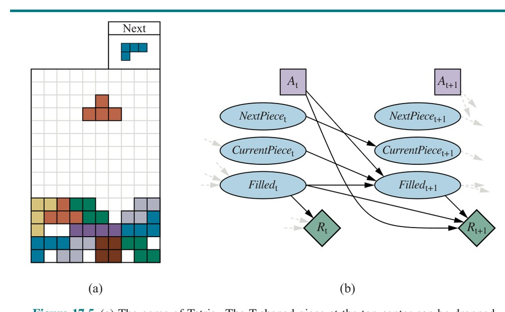
در این بخش، چهار الگوریتمِ متفاوت برای حلِ MDPها ارائه میکنیم. سه تای نخست، تکرارِ مقدار (Value Iteration)، تکرارِ سیاست (Policy Iteration) و برنامهنویسیِ خطی، راهحلهای دقیقِ آفلاین تولید میکنند. چهارمی خانوادهای از الگوریتمهای تقریبیِ برخط است که «برنامهریزیِ مونتکارلو» (Monte Carlo Planning) را شامل میشود.
معادلهٔ بلمن (معادلهٔ (17.5)) مبنای الگوریتمِ «تکرارِ مقدار» (Value Iteration) برای حلِ MDPهاست. اگر n حالتِ ممکن باشد، n معادلهٔ بلمن هست، یکی برای هر حالت. n معادله شاملِ n مجهولاند—مطلوبیتهای حالتها. پس میخواهیم این معادلههای همزمان را برای یافتنِ مطلوبیتها حل کنیم. یک مسئله هست: معادلهها غیرخطیاند، زیرا عملگرِ «max» عملگرِ خطی نیست. در حالی که دستگاههای معادلههای خطی را میتوان با فنونِ جبرِ خطی بهسرعت حل کرد، دستگاههای معادلههای غیرخطی مسئلهدارترند. یکی از کارهایی که میتوان امتحان کرد رویکردِ تکرارشونده است. با مقادیرِ اولیهٔ دلخواهی برای مطلوبیتهای حالتها شروع میکنیم و «بهروزرسانیِ بلمنِ» (Bellman Update) را بهصورتِ بازگشتی اعمال میکنیم:
Ui+1(s) ← max_{a∈A(s)} ∑s′ P(s′|s,a) [R(s,a,s′) + γUi(s′)] (17.10)که در آن فرض میشود بهروزرسانی در هر تکرار همزمان به همهٔ حالتها اعمال میشود. اگر بهروزرسانیِ بلمن را بینهایت بار اعمال کنیم، تضمینشده به تعادلی میرسیم («همگراییِ تکرارِ مقدار» را در زیر ببینید)، که در آن صورت مقادیرِ نهاییِ مطلوبیت باید راهحلهای معادلههای بلمن باشند. در واقع، آنها همچنین راهحلهای یکتایند، و سیاستِ متناظر (بهدستآمده با معادلهٔ (17.4)) بهینه است. الگوریتمِ مفصل، شاملِ شرطِ خاتمه وقتی مطلوبیتها «بهاندازهٔ کافی نزدیکاند»، در شکل ۱۷.۶ نشان داده شده.
function VALUE-ITERATION(mdp, ǫ) returns a utility function
inputs: mdp، an MDP with states S, actions A(s), transition model P(s′|s,a),
rewards R(s,a,s′), discount γ
ǫ، the maximum allowed error in the utility of any state
local variables: U، U′، utility vectors for states in S, initially zero
δ، the maximum change in the utility of any state
repeat:
U ← U′؛ δ ← 0
for each state s in S:
U′[s] ← max_{a∈A(s)} Q-VALUE(mdp, s, a, U)
if |U′[s] − U[s]| > δ then δ ← |U′[s] − U[s]|
until δ ≤ ǫ(1−γ)/γ
return Uمیتوانیم تکرارِ مقدار را بر جهانِ 4×3 در شکل ۱۷.۱(الف) اعمال کنیم. با شروع از مقادیرِ اولیهٔ صفر، مطلوبیتها چنان تکامل مییابند که در شکل ۱۷.۷(الف) نشان داده شده. توجه کنید حالتهای با فاصلههای مختلف از (4,3) چگونه پاداشِ منفی جمع میکنند تا وقتی مسیری به (4,3) یافت شود، و سپس مطلوبیتها شروع به افزایش میکنند. میتوانیم الگوریتمِ تکرارِ مقدار را بهعنوانِ انتشارِ اطلاعات در فضایِ حالت از طریقِ بهروزرسانیهای محلی بدانیم.
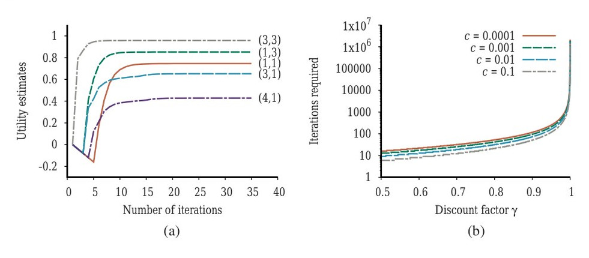
همگراییِ تکرارِ مقدار. گفتیم تکرارِ مقدار سرانجام به مجموعهٔ یکتایی از راهحلهای معادلههای بلمن همگرا میشود. در این بخش توضیح میدهیم چرا این اتفاق میافتد. در طولِ مسیر ایدههای ریاضیِ مفیدی معرفی میکنیم، و روشهایی برای ارزیابیِ خطای تابعِ مطلوبیتِ بازگرداندهشده وقتی الگوریتم زودتر خاتمه مییابد به دست میآوریم؛ این مفید است، زیرا بدان معناست لازم نیست برای همیشه اجرا کنیم. این بخش نسبتاً فنی است.
مفهومِ پایهٔ استفادهشده در نشاندادنِ همگراییِ تکرارِ مقدار، مفهومِ «انقباض» (Contraction) است. بهطورِ تقریبی، انقباض تابعی از یک آرگومان است که، وقتی بهنوبت روی دو ورودیِ متفاوت اعمال شود، دو مقدارِ خروجی تولید میکند که «به هم نزدیکترند»، دستِکم با ضریبِ ثابتی، از ورودیهای اصلی. برای نمونه، تابعِ «تقسیم بر دو» انقباض است، زیرا، پس از تقسیمِ هر دو عدد بر دو، تفاضلشان نصف میشود. توجه کنید تابعِ «تقسیم بر دو» نقطهٔ ثابتی دارد، یعنی صفر، که با اعمالِ تابع تغییر نمیکند. از این مثال، میتوانیم دو ویژگیِ مهمِ انقباضها را دریابیم:
حالا، فرض کنیم بهروزرسانیِ بلمن (معادلهٔ (17.10)) را بهعنوانِ عملگرِ B ببینیم که همزمان برای بهروزرسانیِ مطلوبیتِ هر حالت اعمال میشود. سپس معادلهٔ بلمن به U = BU تبدیل میشود و معادلهٔ بهروزرسانیِ بلمن را میتوان بهصورتِ Ui+1 ← BUi نوشت. بعد، به راهی برای اندازهگیریِ فاصلههای میانِ بردارهای مطلوبیت نیاز داریم. از «نرمِ بیشینه» (Max Norm) استفاده میکنیم، که «طولِ» بردار را با قدرِ مطلقِ بزرگترین مؤلفهاش اندازه میگیرد:
∥U∥ = max_s |U(s)|با این تعریف، «فاصلهٔ» میانِ دو بردار، ∥U − U′∥، بیشینهٔ تفاوت میانِ هر دو عنصرِ متناظر است. نتیجهٔ اصلیِ این بخش بهصورتِ زیر است: فرض کنیم Ui و U′i هر دو بردارِ مطلوبیت باشند. سپس داریم:
∥BUi − BU′i∥ ≤ γ ∥Ui − U′i∥ (17.11)یعنی بهروزرسانیِ بلمن انقباضی با ضریبِ γ روی فضایِ بردارهای مطلوبیت است. (تمرین ۱۷.VICT راهنمایی برای اثباتِ این ادعا فراهم میکند.) از این رو، از ویژگیهای انقباضها بهطورِ کلی، نتیجه میشود تکرارِ مقدار همیشه به راهحلِ یکتای معادلههای بلمن همگرا میشود، هرگاه γ < 1.
همچنین میتوانیم از ویژگیِ انقباض برای تحلیلِ نرخِ همگرایی به راهحل استفاده کنیم. بهطورِ خاص، میتوانیم U′i را در معادلهٔ (17.11) با مطلوبیتهای واقعیِ U جایگزین کنیم، که برایش BU = U. سپس نامساویِ ∥BUi − U∥ ≤ γ∥Ui − U∥ به دست میآید. اگر ∥Ui − U∥ را خطایِ برآوردِ Ui ببینیم، میبینیم خطا در هر تکرار دستِکم با ضریبِ γ کاهش مییابد. بدینترتیب، تکرارِ مقدار بهصورتِ نمایی سریع همگرا میشود. میتوانیم شمارِ تکرارهای لازم را چنین محاسبه کنیم: نخست، از معادلهٔ (17.1) به یاد آورید مطلوبیتهای همهٔ حالتها با ±Rmax/(1−γ) کراندارند. این بدان معناست بیشینهٔ خطایِ اولیه ∥U0 − U∥ ≤ 2Rmax/(1−γ). فرض کنیم N تکرار اجرا میکنیم تا به خطایی حداکثرِ ǫ برسیم. آنگاه، چون خطا هر بار دستِکم با γ کاهش مییابد، لازم داریم:
γᴺ · 2Rmax/(1−γ) ≤ ǫبا گرفتنِ لگاریتم، درمییابیم N = ⌈log(2Rmax/(ǫ(1−γ)))/log(1/γ)⌉ تکرار کافی است. شکل ۱۷.۷(ب) نشان میدهد N چگونه با γ تغییر میکند، برای مقادیرِ مختلفِ نسبتِ ǫ/Rmax. خبرِ خوب این است که، به دلیلِ همگراییِ نماییِ سریع، N چندان به نسبتِ ǫ/Rmax بستگی ندارد. خبرِ بد این است که N با نزدیکشدنِ γ به 1 بهسرعت رشد میکند. اگر γ را کوچک کنیم همگراییِ سریع میگیریم، اما این عملاً افقِ کوتاهی به عامل میدهد و ممکن است اثرهای بلندمدتِ کنشهای عامل را از دست بدهد.
کرانِ خطایِ پاراگرافِ پیشین تا حدی ایدهای از عواملِ مؤثر بر زمانِ اجرایِ الگوریتم میدهد، اما گاهی بهعنوانِ روشی برای تصمیمگیری دربارهٔ زمانِ توقفِ تکرار بیشازحدِ محافظهکارانه است. برای هدفِ اخیر، میتوانیم از کرانی استفاده کنیم که خطا را به اندازهٔ بهروزرسانیِ بلمن در هر تکرارِ معین مرتبط میکند. از ویژگیِ انقباض (معادلهٔ (17.11))، میتوان نشان داد اگر بهروزرسانی کوچک باشد (یعنی مطلوبیتِ هیچ حالتی چندان تغییر نکند)، آنگاه خطا، در مقایسه با تابعِ مطلوبیتِ واقعی، نیز کوچک است. دقیقتر:
اگر ∥Ui+1 − Ui∥ < ǫ(1−γ)/γ آنگاه ∥Ui+1 − U∥ < ǫ (17.12)این شرطِ خاتمهای است که در الگوریتمِ VALUE-ITERATION شکل ۱۷.۶ استفاده شده.
تاکنون خطای تابعِ مطلوبیتِ بازگرداندهشده توسط الگوریتمِ تکرارِ مقدار را تحلیل کردهایم. اما آنچه عامل واقعاً به آن اهمیت میدهد این است که اگر تصمیمهایش را بر اساسِ این تابعِ مطلوبیت بگیرد چقدر خوب عمل خواهد کرد. فرض کنیم پس از i تکرارِ تکرارِ مقدار، عامل برآوردِ Ui از مطلوبیتِ واقعیِ U دارد و سیاستِ بیشینهٔ مطلوبیتِ موردانتظار (MEU) به نام πi را بر اساسِ نگاهبهجلوِ تکگامی با Ui به دست میآورد (مانندِ معادلهٔ (17.4)). آیا رفتارِ حاصل تقریباً بهاندازهٔ رفتارِ بهینه خوب خواهد بود؟ این پرسشِ حیاتی برای هر عاملِ واقعی است، و معلوم میشود پاسخ بله است. Uπi(s) مطلوبیتی است که اگر πi با شروع از s اجرا شود به دست میآید، و «زیانِ سیاستِ» (Policy Loss) ∥Uπi − U∥ بیشترین چیزی است که عامل با اجرایِ πi بهجای سیاستِ بهینهٔ π* میتواند از دست بدهد. زیانِ سیاستِ πi با خطایِ Ui با نامساویِ زیر مرتبط است:
اگر ∥Ui − U∥ < ǫ آنگاه ∥Uπi − U∥ < 2ǫ (17.13)در عمل، اغلب رخ میدهد πi مدتها قبل از همگراییِ Ui بهینه میشود. شکل ۱۷.۸ نشان میدهد بیشینهٔ خطا در Ui و زیانِ سیاست چگونه با پیشرویِ فرایندِ تکرارِ مقدار برای محیطِ 4×3 با γ = 0.9 به صفر نزدیک میشوند. سیاستِ πi وقتی i = 5 بهینه است، حتی اگرچه بیشینهٔ خطا در Ui هنوز 0.51 است.
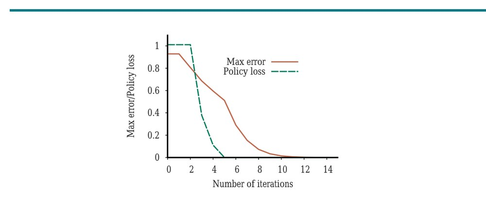
حالا هرچه برای استفادهٔ عملی از تکرارِ مقدار نیاز داریم داریم. میدانیم به مطلوبیتهای درست همگرا میشود، میتوانیم خطای برآوردهای مطلوبیت را اگر پس از شمارِ متناهیِ تکرار متوقف شویم کراندار کنیم، و میتوانیم زیانِ سیاستِ ناشی از اجرایِ سیاستِ MEUِ متناظر را کراندار کنیم. بهعنوانِ یادداشتِ پایانی، همهٔ نتایجِ این بخش به تنزیل با γ < 1 بستگی دارند. اگر γ = 1 و محیط شاملِ حالتهای پایانی باشد، مجموعهٔ مشابهی از نتایجِ همگرایی و کرانهای خطا قابلِ اشتقاق است.
در بخشِ قبلی، مشاهده کردیم میتوان حتی وقتی برآوردِ تابعِ مطلوبیت نادقیق است سیاستِ بهینه به دست آورد. اگر کنشی بهوضوح از همهٔ کنشهای دیگر بهتر باشد، آنگاه بزرگیِ دقیقِ مطلوبیتهای حالتهای درگیر لازم نیست دقیق باشد. این بینش راهِ جایگزینی برای یافتنِ سیاستهای بهینه پیشنهاد میکند. الگوریتمِ «تکرارِ سیاست» (Policy Iteration) دو گامِ زیر را متناوب میکند، با شروع از سیاستِ اولیهٔ π0:
الگوریتم وقتی خاتمه مییابد که گامِ بهبودِ سیاست هیچ تغییری در سیاست ایجاد نکند. در این نقطه، میدانیم تابعِ مطلوبیتِ Ui نقطهٔ ثابتِ بهروزرسانیِ بلمن است، پس راهحلِ معادلههای بلمن است، و πi باید سیاستِ بهینه باشد. چون برای فضایِ حالتِ متناهی فقط شمارِ متناهی سیاست هست، و میتوان نشان داد هر تکرار سیاستِ بهتری میدهد، تکرارِ سیاست باید خاتمه یابد. الگوریتم در شکل ۱۷.۹ نشان داده شده. مانندِ تکرارِ مقدار، از تابعِ Q-VALUE تعریفشده در صفحهٔ ۵۶۹ استفاده میکنیم.
function POLICY-ITERATION(mdp) returns a policy
inputs: mdp, an MDP with states S, actions A(s), transition model P(s′|s,a)
local variables: U, a utility vector for states in S, initially zero
π, a state-indexed policy vector, initially random
repeat:
U ← POLICY-EVALUATION(π, U, mdp)
unchanged? ← true
for each state s in S:
a* ← argmax_{a∈A(s)} Q-VALUE(mdp, s, a, U)
if Q-VALUE(mdp, s, a*, U) > Q-VALUE(mdp, s, π[s], U)
then π[s] ← a*; unchanged? ← false
until unchanged?
return πPOLICY-EVALUATION را چگونه پیادهسازی کنیم؟ معلوم میشود انجامِ این سادهتر از حلِ معادلههای بلمنِ استاندارد است (که تکرارِ مقدار انجام میدهد)، زیرا کنش در هر حالت توسط سیاست ثابت شده. در i-امین تکرار، سیاستِ πi کنشِ πi(s) را در حالتِ s مشخص میکند. این بدان معناست نسخهٔ سادهشدهای از معادلهٔ بلمن (17.5) داریم که مطلوبیتِ s (تحتِ πi) را به مطلوبیتهای همسایههایش مرتبط میکند:
Ui(s) = ∑s′ P(s′|s, πi(s)) [R(s, πi(s), s′) + γUi(s′)] (17.14)برای نمونه، فرض کنیم πi سیاستِ نشاندادهشده در شکل ۱۷.۲(الف) باشد. سپس πi(1,1) = Up، πi(1,2) = Up و مانندِ آن داریم، و معادلههای بلمنِ سادهشده عبارتاند از:
Ui(1,1) = 0.8[−0.04+Ui(1,2)] + 0.1[−0.04+Ui(2,1)] + 0.1[−0.04+Ui(1,1)]
Ui(1,2) = 0.8[−0.04+Ui(1,3)] + 0.2[−0.04+Ui(1,2)]و همینطور برای همهٔ حالتها. نکتهٔ مهم این است که این معادلهها خطیاند، زیرا عملگرِ «max» حذف شده. برای n حالت، n معادلهٔ خطی با n مجهول داریم، که با روشهای استانداردِ جبرِ خطی در زمانِ O(n³) دقیقاً حل میشوند. اگر مدلِ انتقال پراکنده باشد—یعنی اگر هر حالت فقط به شمارِ کمی از حالتهای دیگر انتقال یابد—آنگاه فرایندِ حل میتواند حتی سریعتر باشد.
برای فضاهایِ حالتِ کوچک، ارزیابیِ سیاست با روشهای حلِ دقیق اغلب کارآمدترین رویکرد است. برای فضاهایِ حالتِ بزرگ، زمانِ O(n³) ممکن است بازدارنده باشد. خوشبختانه، انجامِ ارزیابیِ دقیقِ سیاست ضروری نیست. در عوض، میتوانیم شماری از گامهای سادهشدهٔ تکرارِ مقدار (سادهشده، زیرا سیاست ثابت است) انجام دهیم تا تقریبِ نسبتاً خوبی از مطلوبیتها بدهیم. بهروزرسانیِ بلمنِ سادهشده برای این فرایند:
Ui+1(s) ← ∑s′ P(s′|s, πi(s)) [R(s, πi(s), s′) + γUi(s′)]است، و این چند بار تکرار میشود تا برآوردِ مطلوبیتِ بعدی بهصورتِ کارآمد تولید شود. الگوریتمِ حاصل «تکرارِ سیاستِ اصلاحشده» (Modified Policy Iteration) نامیده میشود.
الگوریتمهای توصیفشده تاکنون نیاز به بهروزرسانیِ مطلوبیت یا سیاست برای همهٔ حالتها بهطورِ همزمان دارند. معلوم میشود این امر الزاماً ضروری نیست. در واقع، در هر تکرار، میتوانیم هر زیرمجموعهای از حالتها را برگزینیم و هر نوع بهروزرسانی (بهبودِ سیاست یا تکرارِ مقدارِ سادهشده) را روی آن زیرمجموعه اعمال کنیم. این الگوریتمِ بسیار عمومی «تکرارِ سیاستِ ناهمگام» (Asynchronous Policy Iteration) نامیده میشود. با شرایطِ معینی روی سیاستِ اولیه و تابعِ مطلوبیتِ اولیه، تکرارِ سیاستِ ناهمگام تضمینشده به سیاستِ بهینه همگرا میشود. آزادیِ انتخابِ هر حالت برای کار، بدان معناست میتوانیم الگوریتمهای اکتشافیِ بسیار کارآمدتری طراحی کنیم—برای نمونه، الگوریتمهایی که بر بهروزرسانیِ مقادیرِ حالتهایی تمرکز میکنند که محتمل است توسط سیاستِ خوبی به آنها رسیده شود. برنامهریزی برای نتایجِ کنشی که هرگز انجام نخواهی داد بیمعنی است.
«برنامهنویسیِ خطی» (Linear Programming) یا LP، که در فصل ۴ (صفحهٔ ۱۲۱) بهطورِ مختصر ذکر شد، رویکردِ عمومی برای صورتبندیِ مسائلِ بهینهسازیِ قیددار است، و حلکنندههای LP با قدرتِ صنعتیِ بسیاری موجودند. با توجه به اینکه معادلههای بلمن شاملِ جمعها و maxهای زیادیاند، شاید تعجبآور نباشد که حلِ MDP را میتوان به حلِ برنامهٔ خطیِ مناسبالصورتبندی کاهش داد.
ایدهٔ پایهٔ صورتبندی این است که مطلوبیتهای U(s) هر حالتِ s را بهعنوانِ متغیر در LP در نظر بگیریم، با یادآوریِ اینکه مطلوبیتهای سیاستِ بهینه بالاترین مطلوبیتهای قابلِدستیابیِ سازگار با معادلههای بلمناند. در زبانِ LP، این بدان معناست میخواهیم U(s) را برای همهٔ s کمینه کنیم، مشروط به نامساویهای:
U(s) ≥ ∑s′ P(s′|s,a) [R(s,a,s′) + γU(s′)] برای هر حالتِ s و هر کنشِ aاین ارتباطی از برنامهنویسیِ پویا به برنامهنویسیِ خطی ایجاد میکند، که الگوریتمها و مسائلِ پیچیدگیاش عمیقاً مطالعه شدهاند. برای نمونه، از این واقعیت که برنامهنویسیِ خطی در زمانِ چندجملهای حلشدنی است، میتوان نشان داد MDPها را میتوان در زمانِ چندجملهای در شمارِ حالتها و کنشها و شمارِ بیتهای لازم برای مشخصکردنِ مدل حل کرد. در عمل، معلوم میشود حلکنندههای LP بهندرت بهاندازهٔ برنامهنویسیِ پویا برای حلِ MDPها کارآمدند. علاوه بر این، چندجملهایبودن ممکن است خوب به نظر برسد، اما شمارِ حالتها اغلب بسیار بزرگ است. سرانجام، ارزشِ یادآوری دارد حتی سادهترین و بیاطلاعترین الگوریتمهای جستجویِ فصل ۳ در شمارِ حالتها و کنشها در زمانِ خطی اجرا میشوند.
تکرارِ مقدار و تکرارِ سیاست الگوریتمهای آفلایناند: مانندِ الگوریتمِ A* در فصل ۳، راهحلِ بهینهای برای مسئله تولید میکنند، که سپس عاملِ سادهای میتواند اجرایش کند. برای MDPهای بهاندازهٔ کافی بزرگ، مانندِ MDPِ تتریس با 10⁶² حالت، حلِ دقیقِ آفلاین، حتی با الگوریتمِ زمانِ چندجملهای، ممکن نیست. چند فن برای حلِ تقریبیِ آفلاینِ MDPها توسعه یافته؛ اینها در یادداشتهای پایانِ فصل و در فصل ۲۲ (یادگیریِ تقویتی) پوشش داده شدهاند.
در اینجا الگوریتمهای برخط را در نظر میگیریم، مشابهِ آنهایی که برای بازیکردن در فصل ۵ استفاده شد، جایی که عامل مقدارِ قابلِتوجهی محاسبه در هر نقطهٔ تصمیم انجام میدهد، نه اینکه عمدتاً با اطلاعاتِ ازپیشمحاسبهشده عمل کند.
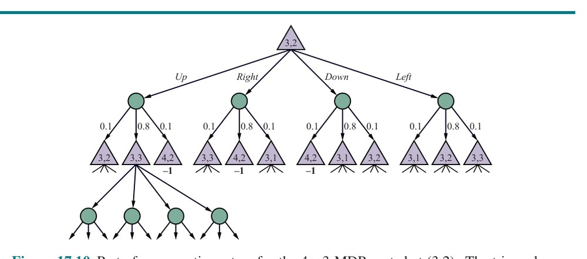
سرراستترین رویکرد در واقع سادهسازیِ الگوریتمِ EXPECTIMINIMAX برای بازیهایِ دونفره است (بخش ۵.۵ را ببینید). در درختِ اکسپکتیمکس، گرههای max به حالتهایی اشاره دارند که عامل باید کنش انتخاب کند، در حالی که گرههای شانس به حالتهایی اشاره دارند که طبیعت نتیجهٔ کنش را با توجه به مدلِ انتقال انتخاب میکند. درختِ MDPِ 4×3 ریشهدار در (3,2) در شکل ۱۷.۱۰ نشان داده شده.
فرض کنیم درختِ اکسپکتیمکس را تا عمقِ ثابتِ H پیادهسازی کنیم، یعنی طبقِ انتظار به حالتهای «جبهه» (Frontier) تا عمقِ H برسیم. همانگونه که در موردِ بازیها، ارزیابیِ برگها توسط یک تابعِ اکتشافیِ ثابت انجام میشود، که میتواند بهعنوانِ برآوردِ تابعِ مطلوبیتِ U تفسیر شود، یا میتوان با نمونهبرداریِ تصادفی از سیاستِ پیشنهادی، مقدارِ تقریبیِ حالتِ جبهه را برآورد کرد. نمونهبرداری بهطورِ طبیعی به تعدادِ بیشتری از پیامدهای محتملِ کنش توجه میکند، زیرا آنها محتملترند تولید شوند.
اگر به درختِ شکل ۱۷.۱۰ با دقت نگاه کنید، چیزی را متوجه میشوید: واقعاً درخت نیست. برای نمونه، ریشه (3,2) نیز برگ است، پس باید این را گرافی در نظر گرفت، و باید مقدارِ برگِ (3,2) را مقید به همان مقدارِ ریشهٔ (3,2) کرد، زیرا همان حالتاند. در واقع، این خطِ فکری بهسرعت ما را به معادلههای بلمن بازمیگرداند که مقادیرِ حالتها را به مقادیرِ حالتهای همسایه مرتبط میکنند. حالتهای کاوششده در واقع زیر-MDP ای از MDP اصلی تشکیل میدهند، و این زیر-MDP را میتوان با هر یک از الگوریتمهای این فصل برای بهدستآوردنِ تصمیمی برای حالتِ کنونی حل کرد. (حالتهای جبهه معمولاً مقدارِ برآوردیِ ثابتی میگیرند.) این رویکردِ عمومی «برنامهنویسیِ پویایِ بلادرنگ» (Real-Time Dynamic Programming) یا RTDP نامیده میشود و کاملاً مشابهِ LRTA* در فصل ۴ است. الگوریتمهای این نوع میتوانند در حوزههای با اندازهٔ متوسط مانندِ جهانهای شبکهای کاملاً مؤثر باشند؛ در حوزههای بزرگتر مانندِ تتریس، دو مسئله هست.
نخست، فضایِ حالت چنان است که هر مجموعهٔ قابلِمدیریتی از حالتهای کاوششده شاملِ حالتهای تکراریِ بسیار کمی است، پس بههمان خوبی میتوان از درختِ اکسپکتیمکسِ ساده استفاده کرد. دوم، اکتشافیِ سادهٔ گرههای جبهه ممکن است برای هدایتِ عامل کافی نباشد، بهطورِ خاص اگر پاداشها پراکنده باشند. یکی از راهحلهای ممکن اعمالِ یادگیریِ تقویتی برای تولیدِ اکتشافیِ بسیار دقیقتر است (فصل ۲۲ را ببینید). رویکردِ دیگر نگاهِ دورتر به جلو در MDP با استفاده از رویکردِ مونتکارلویِ بخش ۵.۴ است. در واقع، الگوریتمِ UCT از شکل ۵.۱۰ در اصل برای MDPها توسعه یافته بود، نه بازیها. تغییرهای لازم برای حلِ MDPها بهجای بازیها کمینهاند: آنها عمدتاً از این واقعیت ناشی میشوند که حریف (طبیعت) تصادفی است و از نیاز به پیگیریِ پاداشها بهجای فقط بردها و باختها.
وقتی روی جهانِ 4×3 اعمال شود، عملکردِ UCT بهطورِ خاص چشمگیر نیست. چنانکه شکل ۱۷.۱۱ نشان میدهد، بهطورِ میانگین ۱۶۰ پلِیاوت (بازیِ شبیهسازیشده) لازم است تا به پاداشِ کلِ 0.4 برسیم، در حالی که سیاستِ بهینه پاداشِ کلِ موردانتظارِ 0.7453 از حالتِ اولیه دارد (شکل ۱۷.۳ را ببینید). یکی از دلایلی که UCT میتواند دچار مشکل شود این است که درخت میسازد نه گراف، و از (تقریبی از) اکسپکتیمکس استفاده میکند نه برنامهنویسیِ پویا. جهانِ 4×3 بسیار «حلقهدار» است: اگرچه فقط ۹ حالتِ غیرپایانی هست، پلِیاوتهای UCT اغلب بیش از ۵۰ کنش ادامه مییابند.
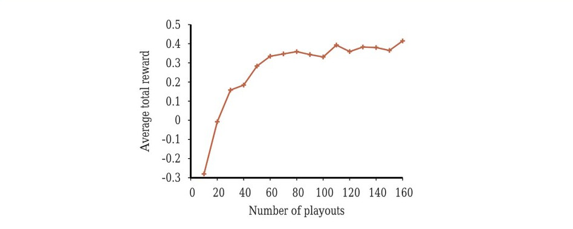
UCT برای تتریس مناسبتر به نظر میرسد، جایی که پلِیاوتها بهاندازهٔ کافی به آینده میروند تا به عامل حسِ اینکه آیا حرکتِ بالقوهٔ پرریسکی در پایان جواب میدهد یا به انباشتِ عظیمی میانجامد بدهند. تمرین ۱۷.UCTT کاربردِ UCT را در تتریس کاوش میکند. یکی از پرسشهای خاصاً جالب این است که سیاستِ شبیهسازیِ سادهای چقدر میتواند کمک کند—برای نمونه، سیاستی که از ایجادِ برآمدگیها اجتناب میکند و قطعهها را تا آنجا که ممکن است پایین میگذارد.
در لاسوگاس، «باندیتِ یکبازویی» (One-Armed Bandit) ماشینِ اسلات است. قمارباز میتواند سکهای بیندازد، اهرم را بکشد و بردها را (اگر باشد) جمع کند. باندیتِ n-بازویی n اهرم دارد. پشتِ هر اهرم توزیعِ احتمالِ ثابت اما ناشناختهای از بردهاست؛ هر کشش از آن توزیعِ ناشناخته نمونهبرداری میکند. قمارباز باید انتخاب کند با هر سکهٔ متوالی کدام اهرم را بازی کند—اهرمی که بهترین بازدهی را داشته، یا شاید اهرمی که هنوز امتحان نشده؟ این نمونهای از معاوضهٔ فراگیرِ میانِ «بهرهبرداری» (Exploitation) از بهترین کنشِ کنونی برای بهدستآوردنِ پاداشها و «کاوش» (Exploration) حالتها و کنشهای قبلاً ناشناخته برای کسبِ اطلاعات است، که در برخی موارد میتواند به سیاستِ بهتر و پاداشهای بلندمدتِ بهتر تبدیل شود. در دنیای واقعی، مدام باید بینِ ادامهٔ وجودِ راحت، در برابرِ زدن به ناشناختهها به امیدِ زندگیِ بهتر تصمیم گرفت.
مسئلهٔ باندیتِ n-بازویی مدلِ صوریِ مسائلِ واقعی در حوزههای حیاتیِ بسیاری است، مانندِ تصمیمگیری دربارهٔ اینکه کدامیک از n درمانِ ممکنِ تازه برای درمانِ بیماری امتحان شود، کدامیک از n سرمایهگذاریِ ممکن بخشی از پساندازتان در آن گذاشته شود، کدامیک از n پروژهٔ پژوهشیِ ممکن تأمینِ مالی شود، یا کدامیک از n تبلیغِ ممکن هنگام بازدیدِ کاربر از صفحهٔ وبِ خاصی نشان داده شود. کارهای اولیه روی مسئله در آمریکا در طولِ جنگِ جهانیِ دوم آغاز شد؛ آنقدر سرسخت از آب درآمد که دانشمندانِ متفقین پیشنهاد کردند «مسئله روی آلمان رها شود، بهعنوانِ ابزارِ نهاییِ خرابکاریِ فکری» (ویتل، 1979).
معلوم میشود دانشمندان، هم در طولِ جنگ و هم پس از آن، سعی میکردند واقعیتهای «بدیهیاً درستِ» دربارهٔ مسائلِ باندیت را اثبات کنند که در واقع کاذباند. (چنانکه برادت و همکاران (1956) گفتند، «ویژگیهای زیبای بسیاری هست که استراتژیهای بهینه از آن برخوردار نیستند.») برای نمونه، بهطورِ کلی فرض میشد سیاستِ بهینه در درازمدت سرانجام روی بهترین اهرم میماند؛ در واقع، احتمالِ متناهیای هست که سیاستِ بهینه روی اهرمِ زیربهینه بماند. اکنون درکِ نظریِ محکمی از مسائلِ باندیت و نیز الگوریتمهای مفیدی برای حلِ آنها داریم. تعریفهای مختلفی از مسائلِ باندیت هست؛ یکی از تمیزترین و عمومیترینها بهصورتِ زیر است:
این تعریف بسیار عمومی است و گسترهٔ وسیعی از موارد را پوشش میدهد. ویژگیِ کلیدی این است که اهرمها مستقلاند، فقط با این واقعیت که عامل میتواند همزمان فقط روی یک اهرم کار کند جفتشدهاند. تعریفِ حتی عمومیتری ممکن است که در آن تلاشهای کسری میتوانند همزمان به همهٔ اهرمها اعمال شوند، اما کلِ تلاشِ روی همهٔ اهرمها کراندار است؛ نتایجِ پایهٔ توصیفشده در اینجا به این حالت نیز منتقل میشوند.
بهزودی خواهیم دید چگونه مسئلهٔ باندیتِ نمونهای را در این چارچوب صورتبندی کنیم، اما بیایید با حالتِ خاصِ سادهٔ توالیهای پاداشِ قطعی گرم کنیم. فرض کنیم γ = 0.5، و دو اهرم با برچسبِ M و M1 باشد. کشیدنِ مکررِ M توالیِ پاداشِ 0,2,0,7.2,0,0,... را میدهد، در حالی که کشیدنِ M1 به 1,1,1,... میانجامد (شکل ۱۷.۱۲(الف)).
اگر، در آغاز، باید به یکی از اهرمها متعهد میشدیم و به آن میچسبیدیم، انتخاب با محاسبهٔ مطلوبیت (پاداشِ کلِ تنزیلشده) برای هر اهرم انجام میشد:
U(M) = (1.0×0) + (0.5×2) + (0.5²×0) + (0.5³×7.2) = 1.9
U(M1) = ∑_{t=0}^{∞} 0.5ᵗ = 2.0ممکن است فکر کنیم بهترین انتخاب رفتن با M1 است، اما یک لحظه فکرِ بیشتر نشان میدهد شروع با M و سپس سوئیچ به M1 پس از پاداشِ چهارم، توالیِ S = 0,2,0,7.2,1,1,1,... را میدهد، که برایش:
U(S) = (1.0×0) + (0.5×2) + (0.5²×0) + (0.5³×7.2) + ∑_{t=4}^{∞} 0.5ᵗ = 2.025از این رو، استراتژیِ S که در زمانِ درست از M به M1 سوئیچ میکند، از هر یک از اهرمها بهتنهایی بهتر است. در واقع، S برای این مسئله بهینه است: همهٔ زمانهای سوئیچِ دیگر پاداشِ کمتری میدهند.
بیایید این حالت را کمی تعمیم دهیم، بهگونهای که حالا اهرمِ نخستِ M توالیِ دلخواهِ R0,R1,R2,... را بدهد (که ممکن است معلوم یا نامعلوم باشد) و اهرمِ دومِ Mλ برای ثابتِ معلومِ λ توالیِ λ,λ,λ,... را بدهد (شکل ۱۷.۱۲(ب) را ببینید). این در ادبیات «باندیتِ یکبازویی» (One-Armed Bandit) نامیده میشود، زیرا بهصورتِ صوری معادلِ حالتی است که یک اهرمِ M پاداشهای R0,R1,R2,... تولید میکند و برای هر کشش هزینهٔ λ دارد. (کشیدنِ اهرمِ M معادلِ نکشیدنِ Mλ است، پس هر بار پاداشِ λ را از دست میدهد.) با فقط یک اهرم، تنها انتخاب این است که دوباره بکشیم یا متوقف شویم. اگر اهرمِ نخست را T بار بکشید (یعنی در زمانهای 0,1,...,T−1)، میگوییم «زمانِ توقف» (Stopping Time) برابر T است.
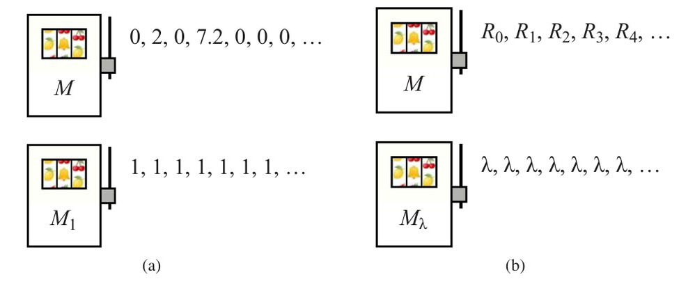
با بازگشت به نسخهمان با M و Mλ، فرض کنیم پس از T کششِ اهرمِ نخست، استراتژیِ بهینه سرانجام برای نخستین بار اهرمِ دوم را بکشد. چون از این حرکت اطلاعاتی به دست نمیآید (از قبل میدانیم بازدهی λ خواهد بود)، در زمانِ T+1 در همان وضعیت خواهیم بود و بنابراین استراتژیِ بهینه باید همان انتخاب را بکند. بهطورِ معادل، میتوانیم بگوییم استراتژیِ بهینه این است که اهرمِ M را تا زمانِ T اجرا کند و سپس برای بقیهٔ زمان به Mλ سوئیچ کند. ممکن است T = 0 باشد اگر استراتژی بلافاصله Mλ را انتخاب کند، یا T = ∞ اگر استراتژی هرگز Mλ را انتخاب نکند، یا جایی در بین. حالا مقدارِ λ را در نظر بگیریم بهگونهای که استراتژیِ بهینه دقیقاً بیتفاوت باشد میانِ (الف) اجرایِ M تا بهترین زمانِ توقفِ ممکن و سپس سوئیچِ همیشگی به Mλ، و (ب) انتخابِ بلافاصلهٔ Mλ. در این نقطهٔ بیتفاوتی (سربهسر) داریم:
max_{T>0} E[∑_{t=0}^{T−1} γᵗRt] + ∑_{t=T}^{∞} γᵗλ = ∑_{t=0}^{∞} γᵗλکه بهصورتِ زیر ساده میشود:
λ = max_{T>0} E[∑_{t=0}^{T−1} γᵗRt] / E[∑_{t=0}^{T−1} γᵗ] (17.15)این معادله نوعی «ارزش» برای M بر حسبِ تواناییاش در تحویلِ جریانی از پاداشهای بهموقع تعریف میکند؛ شمارندهٔ کسر مطلوبیتی را بازنمایی میکند، در حالی که مخرج را میتوان «زمانِ تنزیلشده» دانست، پس ارزش، حداکثرِ مطلوبیتِ قابلِحصول بهازای هر واحدِ زمانِ تنزیلشده را توصیف میکند. (مهم است به یاد داشته باشیم T در معادله زمانِ توقف است، که با قاعدهای برای توقف اداره میشود نه عددِ صحیحِ ساده؛ فقط وقتی M توالیِ پاداشِ قطعی باشد به عددِ صحیحِ ساده کاهش مییابد.) ارزشِ تعریفشده در معادلهٔ (17.15) «شاخصِ گیتینز» (Gittins Index) M نامیده میشود.
نکتهٔ قابلِتوجهِ شاخصِ گیتینز این است که سیاستِ بهینهٔ بسیار سادهای برای هر مسئلهٔ باندیتی فراهم میکند: اهرمی را بکش که بالاترین شاخصِ گیتینز را دارد، سپس شاخصهای گیتینز را بهروزرسانی کن. علاوه بر این، چون شاخصِ اهرمِ Mi فقط به ویژگیهای آن اهرم بستگی دارد، تصمیمِ بهینه در نخستین تکرار را میتوان در زمانِ O(n) محاسبه کرد، که در آن n شمارِ اهرمهاست. و چون شاخصهای گیتینزِ اهرمهای انتخابنشده بدونِ تغییر میمانند، هر تصمیمِ پس از نخستین را میتوان در زمانِ O(1) محاسبه کرد.
برای حسِ بیشترِ شاخص، مقدارِ شمارنده، مخرج و نسبتِ معادلهٔ (17.15) را برای زمانهای توقفِ مختلف روی توالیِ پاداشِ قطعیِ 0,2,0,7.2,0,0,0,... محاسبه کنیم:
| T | 1 | 2 | 3 | 4 | 5 | 6 |
|---|---|---|---|---|---|---|
| Rt | 0 | 2 | 0 | 7.2 | 0 | 0 |
| ∑γᵗRt | 0.0 | 1.0 | 1.0 | 1.9 | 1.9 | 1.9 |
| ∑γᵗ | 1.0 | 1.5 | 1.75 | 1.875 | 1.9375 | 1.9687 |
| نسبت | 0.0 | 0.6667 | 0.5714 | 1.0133 | 0.9806 | 0.9651 |
واضح است که نسبت از این پس کاهش خواهد یافت، زیرا شمارنده ثابت میماند در حالی که مخرج همچنان افزایش مییابد. بدینترتیب، شاخصِ گیتینز برای این اهرم 1.0133 است، بیشینهٔ مقدارِ بهدستآمده توسط نسبت. در ترکیب با اهرمِ ثابتِ Mλ با 0 < λ ≤ 1.0133، سیاستِ بهینه چهار پاداشِ نخست را از M دریافت میکند و سپس به Mλ سوئیچ میکند. برای λ > 1.0133، سیاستِ بهینه همیشه Mλ را انتخاب میکند.
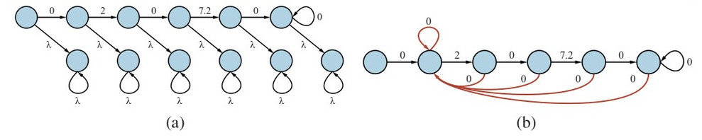
برای محاسبهٔ شاخصِ گیتینز برای اهرمِ عمومیِ M با حالتِ کنونیِ s، صرفاً مشاهدهٔ زیر را انجام میدهیم: در نقطهٔ بیتفاوتی، جایی که سیاستِ بهینه میانِ انتخابِ اهرمِ M و انتخابِ اهرمِ ثابتِ Mλ بیتفاوت است، ارزشِ انتخابِ M همان ارزشِ انتخابِ توالیِ نامتناهیِ پاداشهای λ است. فرض کنیم M را تقویت کنیم بهگونهای که در هر حالتِ M، عامل دو انتخاب داشته باشد: یا مثلِ قبل با M ادامه دهد، یا کنار بکشد و توالیِ نامتناهیِ پاداشهای λ دریافت کند (شکل ۱۷.۱۳(الف) را ببینید). این M را به MDP تبدیل میکند، که سیاستِ بهینهاش صرفاً قاعدهٔ توقفِ بهینه برای M است. از این رو، ارزشِ سیاستِ بهینه در این MDPِ تازه برابرِ ارزشِ توالیِ نامتناهیِ پاداشهای λ است، یعنی λ/(1−γ). پس میتوانیم این MDP را حل کنیم... اما، متأسفانه، مقدارِ λ را برای گذاشتن در MDP نمیدانیم، زیرا این دقیقاً همان چیزی است که میخواهیم محاسبه کنیم. اما میدانیم در نقطهٔ بیتفاوتی، سیاستِ بهینه میانِ M و Mλ بیتفاوت است، پس میتوانیم انتخابِ دریافتِ توالیِ نامتناهیِ پاداشهای λ را با انتخابِ بازگشت و راهاندازیِ دوبارهٔ M از حالتِ اولیهاش s جایگزین کنیم. (دقیقتر، در هر حالت کنشِ تازهای میافزاییم که همان پاداشها و پیامدهای کنشِ موجود در s را دارد؛ تمرین ۱۷.KATV را ببینید.) این MDPِ تازهٔ Ms، «MDPِ راهاندازیِ دوباره» (Restart MDP) نامیده میشود و در شکل ۱۷.۱۳(ب) نشان داده شده. نتیجهٔ عمومی داریم که شاخصِ گیتینز برای اهرمِ M در حالتِ s برابرِ 1−γ ضربدرِ ارزشِ سیاستِ بهینه برای MDPِ راهاندازیِ دوبارهٔ Ms است. این MDP را میتوان با هر یک از الگوریتمهای بخش ۱۷.۲ حل کرد. تکرارِ مقدارِ اعمالشده بر Ms در شکل ۱۷.۱۳(ب) برای حالتِ شروع مقدارِ 2.0266 میدهد، پس λ = 2.0266·(1−γ) = 1.0133 داریم، همانگونه که قبلاً.
شاید سادهترین و شناختهشدهترین نمونهٔ مسئلهٔ باندیت «باندیتِ برنولی» (Bernoulli Bandit) باشد، که در آن هر اهرمِ Mi با احتمالِ ثابت اما ناشناختهٔ µi پاداشِ 0 یا 1 تولید میکند. حالتِ اهرمِ Mi با si و fi، شمارِ موفقیتها (1ها) و شکستها (0ها) تاکنون برای آن اهرم، تعریف میشود؛ احتمالِ انتقال، پیامدِ بعدی را با احتمالِ (si)/(si + fi) برابرِ 1 و با احتمالِ (fi)/(si + fi) برابرِ 0 پیشبینی میکند. شمارشها به 1 مقداردهی میشوند تا احتمالهای اولیه 1/2 باشند نه 0/0.⁴ فرایندِ پاداشِ مارکوف در شکل ۱۷.۱۴(الف) نشان داده شده. احتمالها احتمالهای فرایندِ بهروزرسانیِ بیزی با پیشینِ Beta(1,1) هستند (بخش ۲۰.۲.۵ را ببینید).
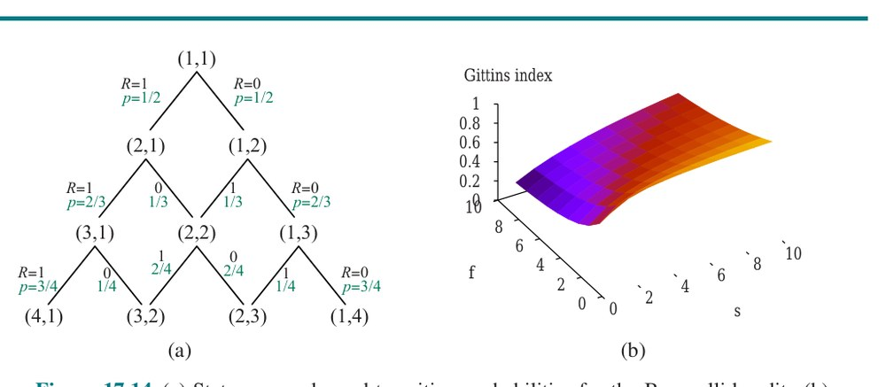
نمیتوانیم کاملاً تبدیلِ بخشِ قبلی را برای محاسبهٔ شاخصِ گیتینزِ اهرمِ برنولی اعمال کنیم، زیرا بینهایت حالت دارد. اما میتوانیم با حلِ MDPِ بُریدهشده با حالتهای تا si + fi = 100 و γ = 0.9 تقریبِ بسیار دقیقی به دست آوریم. نتایج در شکل ۱۷.۱۴(ب) نشان داده شدهاند. نتایج بهصورتِ شهودی معقولاند: میبینیم، بهطورِ کلی، اهرمهای با احتمالهای بازدهیِ بالاتر ترجیح داده میشوند، اما همچنین «پاداشِ کاوشِ» (Exploration Bonus) مرتبط با اهرمهایی هست که فقط چند بار امتحان شدهاند. برای نمونه، شاخصِ حالتِ (3,2) بالاتر از شاخصِ حالتِ (7,4) است (0.7057 در برابرِ 0.6922)، حتی اگرچه مقدارِ برآوردشده در (3,2) پایینتر است (0.6 در برابرِ 0.6364).
محاسبهٔ شاخصهای گیتینز برای مسائلِ واقعگرایانهتر بهندرت آسان است. خوشبختانه، ویژگیهای عمومیِ مشاهدهشده در بخشِ قبلی—یعنی مطلوبیتِ ترکیبی از مقدارِ برآوردشده و عدم قطعیت—خود را به ایجادِ سیاستهای سادهای میدهند که معلوم میشود «تقریباً بهاندازهٔ» سیاستهای بهینه خوباند.
نخستین رده از روشها از «کرانِ بالایِ اطمینان» (Upper Confidence Bound) یا اکتشافیِ UCB استفاده میکند، که قبلاً برای جستجوی درختیِ مونتکارلو معرفی شد (شکل ۵.۱۱ صفحهٔ ۱۶۳). ایدهٔ پایه استفاده از نمونههای هر اهرم برای برقراریِ بازهٔ اطمینانِ مقدارِ اهرم است، یعنی بازهای که مقدار با اطمینانِ بالا میتواند در آن تخمین زده شود؛ سپس اهرمی را انتخاب کن که بالاترین کرانِ بالای بازهٔ اطمینانش را دارد. کرانِ بالا، برآوردِ میانگینِ کنونیِ µ̂i بهعلاوهٔ چند برابرِ انحرافِ معیارِ عدم قطعیتِ مقدار است. انحرافِ معیار با √(1/Ni) متناسب است، که در آن Ni شمارِ دفعاتِ نمونهبرداری از اهرمِ Mi است. پس مقدارِ شاخصیِ تقریبی برای اهرمِ Mi داریم:
UCB(Mi) = µ̂i + g(N)/√Niکه در آن g(N) تابعِ مناسبالانتخابی از N، شمارِ کلِ نمونههای کشیدهشده از همهٔ اهرمهاست. سیاستِ UCB صرفاً اهرمی را با بالاترین مقدارِ UCB برمیگزیند. توجه کنید مقدارِ UCB در معنایِ دقیق کلمه یک شاخص نیست، زیرا به N، شمارِ کلِ نمونههای کشیدهشده روی همهٔ اهرمها، بستگی دارد، نه فقط به خودِ اهرم.
تعریفِ دقیقِ g «پشیمانیِ» (Regret) نسبت به سیاستِ دانایکل (Clairvoyant) را تعیین میکند، که صرفاً بهترین اهرم را برمیگزیند و پاداشِ میانگینِ µ* را میدهد. نتیجهٔ مشهوری از لای و رابینز (1985) نشان میدهد، برای حالتِ بدونِ تنزیل، هیچ الگوریتمِ ممکنی نمیتواند پشیمانیای داشته باشد که کندتر از O(logN) رشد کند. چند انتخابِ مختلفِ g به سیاستِ UCBای میانجامند که با این رشد همخوان است؛ برای نمونه، میتوانیم از g(N) = (2log(1+N·log²N))^{1/2} استفاده کنیم.
روشِ دوم، «نمونهبرداریِ تامسون» (Thompson Sampling) (تامسون، 1933)، اهرمی را بهصورتِ تصادفی طبقِ احتمالِ اینکه اهرم در واقع بهینه است، با توجه به نمونههای تاکنون، انتخاب میکند. فرض کنیم Pi(µi) توزیعِ احتمالِ کنونیِ مقدارِ واقعیِ اهرمِ Mi باشد. سپس راهِ سادهای برای پیادهسازیِ نمونهبرداریِ تامسون این است که یک نمونه از هر Pi تولید کنیم، اهرمی را با بالاترین نمونه انتخاب کنیم، سپس با مشاهدهٔ پاداشِ واقعی، توزیعِ آن اهرم را بهروزرسانی کنیم. برای اهرمهای برنولی با توزیعِ Beta، بهروزرسانیها بسیار سادهاند: اگر پاداش 1 بود، پارامترِ موفقیت را افزایش بده؛ اگر 0 بود، پارامترِ شکست را. این روشها بهخوبی کار میکنند و بهطورِ گسترده در صنعت استفاده میشوند؛ مزیتِ عمدهشان نسبت به شاخصِ گیتینز سادگیِشان است.
مسائلِ باندیت تا حدی با تکلیفِ آزمایشِ درمانهای پزشکیِ تازه روی بیمارانِ بهشدت بیمار انگیزهمند شدند. برای این تکلیف، هدفِ بیشینهکردنِ شمارِ کلِ موفقیتها در طولِ زمان بهوضوح معنا دارد: هر آزمایشِ موفق یعنی زندگیِ نجاتیافته، هر شکست یعنی زندگیِ ازدسترفته. اما اگر مفروضات را کمی تغییر دهیم، مسئلهٔ متفاوتی پدید میآید. فرض کنیم، بهجای تعیینِ بهترین درمانِ پزشکی برای هر بیمارِ انسانیِ تازه، در عوض داروهای متفاوتی را روی نمونههایی از باکتری آزمایش میکنیم با هدفِ تصمیمگیری دربارهٔ اینکه کدام دارو بهترین است. سپس آن دارو را واردِ تولید میکنیم و بقیه را رها میکنیم. در این سناریو هزینهٔ اضافیای ندارد اگر باکتری بمیرد—هزینهٔ ثابتی برای هر آزمایش هست، اما لازم نیست شکستهای آزمایش را کمینه کنیم؛ بلکه فقط سعی میکنیم هرچه سریعتر تصمیمِ خوبی بگیریم.
تکلیفِ انتخابِ بهترین گزینه تحتِ این شرایط «مسئلهٔ انتخاب» (Selection Problem) نامیده میشود. مسائلِ انتخاب در بافتهای صنعتی و پرسنلی فراگیرند. اغلب باید تصمیم گرفت از کدام تأمینکننده برای فرایندی استفاده شود؛ یا کدام کارکنِ نامزد استخدام شود. مسائلِ انتخاب از نظرِ سطحی شبیهِ مسئلهٔ باندیتاند اما ویژگیهای ریاضیِ متفاوتی دارند. بهطورِ خاص، هیچ تابعِ شاخصی برای مسائلِ انتخاب وجود ندارد. اثباتِ این واقعیت مستلزم نشاندادنِ سناریویی است که در آن سیاستِ بهینه ترجیحهایش را برای دو اهرمِ M1 و M2 عوض میکند وقتی اهرمِ سومیِ M3 افزوده میشود (تمرین ۱۷.SELC را ببینید).
فصل ۵ مفهومِ مسائلِ تصمیمِ فراسطحی (Metalevel Decision Problems) را معرفی کرد، مانندِ تصمیمگیری دربارهٔ اینکه چه محاسباتی در طولِ جستجوی درختِ بازی قبل از حرکت انجام شود. تصمیمِ فراسطحی از این نوع نیز مسئلهٔ انتخاب است، نه مسئلهٔ باندیت. بدیهی است، بسطِ گره یا ارزیابی همان مقدارِ زمان را هزینه دارد، خواه مقدارِ خروجیِ بالا یا پایین تولید کند. پس شاید شگفتآور باشد که الگوریتمِ جستجوی درختیِ مونتکارلو (صفحهٔ ۱۶۳ را ببینید) اینقدر موفق بوده، با توجه به اینکه میکوشد مسائلِ انتخاب را با اکتشافیِ UCB حل کند، که برای مسائلِ باندیت طراحی شده بود. بهطورِ کلی، انتظار میرود الگوریتمهای باندیتِ بهینه بسیار کمتر از الگوریتمهای انتخابِ بهینه کاوش کنند، زیرا الگوریتمِ باندیت فرض میکند آزمایشِ ناموفق پولِ واقعی هزینه دارد.
تعمیمِ مهمِ فرایندِ باندیت «ابرفرایندِ باندیت» (Bandit Superprocess) یا BSP است، که در آن هر اهرم به خودیِ خود یک فرایندِ تصمیمِ مارکوفِ کامل است، نه اینکه فرایندِ پاداشِ مارکوف با فقط یک کنشِ ممکن باشد. همهٔ ویژگیهای دیگر یکساناند: اهرمها مستقلاند، فقط یکی (یا شمارِ کرانداری) میتواند همزمان رویش کار شود، و یک عاملِ تنزیلِ تکی هست. نمونههای BSP شاملِ زندگیِ روزمرهاند، جایی که میتوان همزمان به یک تکلیف پرداخت، حتی اگر چند تکلیف نیازمندِ توجه باشند؛ مدیریتِ پروژه با چند پروژه؛ تدریس با چند شاگردِ نیازمندِ راهنماییِ فردی؛ و مانندِ آن. اصطلاحِ معمولی برای این «چندوظیفگی» (Multitasking) است. آنقدر فراگیر است که بهندرت قابلِ توجه است: هنگام صورتبندیِ مسئلهٔ تصمیمِ دنیایِ واقعی، تحلیلگرانِ تصمیم بهندرت میپرسند آیا مشتریشان مسائلِ دیگر و نامرتبطی دارد.
ممکن است کسی چنین استدلال کند: «اگر n تا MDPِ مجزا وجود داشته باشد، بدیهی است سیاستِ بهینهٔ کلی از راهحلهای بهینهٔ MDPهای فردی ساخته میشود. با سیاستِ بهینهاش πi، هر MDP به فرایندِ پاداشِ مارکوف تبدیل میشود که در آن فقط یک کنشِ πi(s) در هر حالتِ s هست. پس ابرفرایندِ باندیتِ n-بازویی را به فرایندِ باندیتِ n-بازویی کاهش دادهایم.» برای نمونه، اگر توسعهدهندهٔ املاک یک گروهِ ساختوساز و چند مرکزِ خرید برای ساختن داشته باشد، به نظر صرفاً عقلِ سلیم میرسد باید برای هر مرکزِ خرید طرحِ ساختِ بهینه تدوین کرد و سپس مسئلهٔ باندیت را برای تصمیمگیری دربارهٔ اینکه هر روز گروه را کجا بفرستد حل کرد.
اگرچه این بسیار محتمل به نظر میرسد، نادرست است. در واقع، سیاستِ بهینهٔ سراسری برای BSP ممکن است کنشهایی شامل شود که از دیدگاهِ MDPِ سازندهای که در آنها گرفته میشوند بهصورتِ محلی زیربهینهاند. دلیلش این است که در دسترسبودنِ MDPهای دیگر برای عملکردن، توازنِ میانِ پاداشهای کوتاهمدت و بلندمدت را در MDPِ مؤلفهای تغییر میدهد. در واقع، تمایل به رفتارِ حریصانهتر در هر MDP دارد (جستجوی پاداشهای کوتاهمدت)، زیرا هدفگرفتنِ پاداشِ بلندمدت در یک MDP، پاداشها را در همهٔ MDPهای دیگر به تأخیر میانداخت.
برای نمونه، فرض کنیم برنامهٔ ساختِ بهینهٔ محلی برای یک مرکزِ خرید نخستین مغازه را تا هفتهٔ ۱۵ برای اجاره در دسترس دارد، در حالی که برنامهٔ زیربهینه هزینهٔ بیشتری دارد اما نخستین مغازه را تا هفتهٔ ۵ در دسترس دارد. اگر چهار مرکزِ خرید برای ساختن باشد، شاید بهتر باشد در هر یک از برنامهٔ زیربهینهٔ محلی استفاده شود تا اجارهها از هفتههای ۵، ۱۰، ۱۵ و ۲۰ جاری شوند، نه هفتههای ۱۵، ۳۰، ۴۵ و ۶۰. به بیانِ دیگر، آنچه برای MDPِ تکی فقط ۱۰ هفته تأخیر میبود، برای MDPِ چهارم به ۴۰ هفته تأخیر تبدیل میشود. بهطورِ کلی، سیاستهای سراسری و محلیِ بهینه لزوماً فقط وقتی بر هم منطبقاند که عاملِ تنزیل 1 باشد؛ در آن صورت، هزینهای برای تأخیرِ پاداشها در هیچ MDPای نیست.
پرسشِ بعدی این است که BSPها را چگونه حل کنیم. بدیهی است، راهحلِ بهینهٔ سراسری برای BSP را میتوان با تبدیلِ آن به MDPِ سراسری روی فضایِ حالتِ حاصلضربِ دکارتی محاسبه کرد. شمارِ حالتها در شمارِ اهرمهای BSP نمایی میبود، پس این بهطرزِ وحشتناکی غیرعملی میبود. در عوض، میتوانیم از ماهیتِ سستِ تعاملِ میانِ اهرمها بهره بگیریم. این تعامل فقط از تواناییِ محدودِ عامل برای پرداختنِ همزمان به اهرمها ناشی میشود. تا حدی، تعامل را میتوان با مفهومِ «هزینهٔ فرصت» (Opportunity Cost) مدل کرد: چقدر مطلوبیت در هر گامِ زمانی با اختصاصندادنِ آن گامِ زمانی به اهرمِ دیگر از دست میرود. هرچه هزینهٔ فرصت بالاتر باشد، تولیدِ پاداشهای زودرس در اهرمِ معین ضروریتر است. در برخی موارد، سیاستِ بهینه در اهرمِ معین تحتِ تأثیرِ هزینهٔ فرصت قرار نمیگیرد. (بهطورِ پیشپاافتاده، این در فرایندِ پاداشِ مارکوف صادق است، زیرا فقط یک سیاست هست.) در آن صورت، سیاستِ بهینه را میتوان اعمال کرد و آن اهرم را به فرایندِ پاداشِ مارکوف تبدیل کرد. چنین سیاستِ بهینهای، اگر وجود داشته باشد، «سیاستِ مسلط» (Dominating Policy) نامیده میشود. معلوم میشود با افزودنِ کنشها به حالتها، همیشه میتوان نسخهٔ سستشدهای از MDP ساخت (بخش ۳.۶.۲ را ببینید) بهگونهای که سیاستِ مسلط داشته باشد، که بدینترتیب کرانِ بالایی بر ارزشِ عملکردن در اهرم میدهد. کرانِ پایین را میتوان با حلِ جداگانهٔ هر اهرم (که ممکن است بهطورِ کلی سیاستِ زیربهینه بدهد) و سپس محاسبهٔ شاخصهای گیتینز محاسبه کرد. اگر کرانِ پایینِ عملکردن در یک اهرم از کرانهای بالای همهٔ کنشهای دیگر بالاتر باشد، مسئله حل شده؛ اگر نه، ترکیبی از جستجوی نگاهبهجلو و محاسبهٔ دوبارهٔ کرانها تضمینشده سرانجام سیاستِ بهینهای را برای BSP شناسایی میکند. با این رویکرد، BSPهای نسبتاً بزرگی (10⁴⁰ حالت یا بیشتر) را میتوان در چند ثانیه حل کرد.
توصیفِ فرایندهای تصمیمِ مارکوف در بخش ۱۷.۱ فرض میکرد محیط کاملاً قابل مشاهده است. با این فرض، عامل همیشه میداند در کدام حالت است. این، همراه با فرضِ مارکوف برای مدلِ انتقال، بدان معناست سیاستِ بهینه فقط به حالتِ کنونی بستگی دارد.
وقتی محیط فقط تا حدی قابل مشاهده است، وضعیت، میتوان گفت، بسیار کمتر روشن است. عامل لزوماً نمیداند در کدام حالت است، پس نمیتواند کنشِ π(s) توصیهشده برای آن حالت را اجرا کند. علاوه بر این، مطلوبیتِ حالتِ s و کنشِ بهینه در s نه فقط به s، بلکه به میزانِ دانستنِ عامل هنگامِ بودن در s نیز بستگی دارد. به این دلایل، «MDPهای تا حدی قابل مشاهده» (Partially Observable MDPs) یا POMDPها—تلفظ «پام-دی-پی»—معمولاً بسیار دشوارتر از MDPهای معمولی دیده میشوند. با این حال، نمیتوانیم از POMDPها اجتناب کنیم، زیرا دنیای واقعی یکی است.
برای دستیافتن به POMDPها، نخست باید آنها را درست تعریف کنیم. POMDP همان عناصر MDP را دارد—مدلِ انتقالِ P(s′|s,a)، کنشهای A(s) و تابعِ پاداشِ R(s,a,s′)—اما، مانندِ مسائلِ جستجویِ تا حدی قابل مشاهدهٔ بخش ۴.۴، مدلِ حسگرِ P(e|s) نیز دارد. در اینجا، مانندِ فصل ۱۴، مدلِ حسگر احتمالِ ادراکِ شواهدِ e در حالتِ s را مشخص میکند.⁵ برای نمونه، میتوانیم جهانِ 4×3 شکل ۱۷.۱ را با افزودنِ حسگرِ نویزی یا جزئی بهجای فرضِ اینکه عامل مکانش را دقیقاً میداند، به POMDP تبدیل کنیم. حسگرِ چهاربیتیِ نویزیِ صفحهٔ ۴۷۶ میتواند استفاده شود، که حضور یا غیابِ دیوار را در هر جهتِ قطبی با دقتِ 1−ǫ گزارش میکند.
مانندِ MDPها، میتوانیم بازنماییهای فشردهای برای POMDPهای بزرگ با استفاده از شبکههای تصمیمِ پویا به دست آوریم (بخش ۱۷.۱.۴ را ببینید). متغیرهای حسگرِ Et را میافزاییم، با فرضِ اینکه متغیرهای حالتِ Xt ممکن است مستقیماً قابل مشاهده نباشند. مدلِ حسگرِ POMDP سپس با P(Et|Xt) داده میشود. برای نمونه، ممکن است متغیرهای حسگری به DDN شکل ۱۷.۴ بیفزاییم، مانندِ BatteryMetert برای برآوردِ شارژِ واقعیِ Batteryt و Speedometert برای برآوردِ بزرگیِ بردارِ سرعتِ Ẋt. حسگرِ سونارِ Wallst ممکن است فواصلِ برآوردی تا نزدیکترین دیوار را در هر یک از چهار جهتِ اصلیِ نسبی به جهتگیریِ کنونیِ ربات بدهد؛ این مقادیر به موقعیت و جهتگیریِ کنونیِ Xt بستگی دارند.
در فصلهای ۴ و ۱۱، مسائلِ برنامهریزیِ ناجبرگرایانه و تا حدی قابل مشاهده را مطالعه کردیم و «حالتِ باور» (Belief State)—مجموعهٔ حالتهای واقعی که عامل ممکن است در آن باشد—را بهعنوانِ مفهومِ کلیدی برای توصیف و محاسبهٔ راهحلها شناسایی کردیم. در POMDPها، حالتِ باورِ b توزیعِ احتمالی روی همهٔ حالتهای ممکن میشود، درست مانندِ فصل ۱۴. برای نمونه، حالتِ باورِ اولیه برای POMDPِ 4×3 میتواند توزیعِ یکنواخت روی نه حالتِ غیرپایانی همراه با 0ها برای حالتهای پایانی باشد، یعنی ⟨1/9, 1/9, 1/9, 1/9, 1/9, 1/9, 1/9, 1/9, 1/9, 0, 0⟩. از نمادِ b(s) برای اشاره به احتمالِ تخصیصدادهشده به حالتِ واقعیِ s توسط حالتِ باورِ b استفاده میکنیم. عامل میتواند حالتِ باورِ کنونیاش را بهعنوانِ توزیعِ احتمالِ شرطی روی حالتهای واقعی، با توجه به توالیِ حسگذارِهها و کنشها تاکنون، محاسبه کند. این اساساً همان تکلیفِ فیلترکردنِ توصیفشده در فصل ۱۴ است. معادلهٔ پایهٔ فیلترکردنِ بازگشتی (14.5 در صفحهٔ ۴۶۷) نشان میدهد چگونه حالتِ باورِ تازه را از حالتِ باورِ قبلی و شاهدِ تازه محاسبه کنیم. برای POMDPها، کنشی نیز باید در نظر بگیریم، اما نتیجه اساساً یکسان است. اگر b حالتِ باورِ قبلی بود، و عامل کنشِ a را انجام دهد و سپس شواهدِ e را ادراک کند، آنگاه حالتِ باورِ تازه با محاسبهٔ احتمالِ اکنونبودنِ در حالتِ s′، برای هر s′، با فرمولِ زیر به دست میآید:
b′(s′) = αP(e|s′) ∑s P(s′|s,a) b(s)که در آن α ثابتِ نرمالسازی است که مجموعِ احتمالهای حالتِ باور را برابر با ۱ میسازد. به قیاس با عملگرِ بهروزرسانیِ فیلترکردن (صفحهٔ ۴۶۷)، میتوانیم این را چنین بنویسیم:
b′ = αFORWARD(b, a, e) (17.16)در POMDPِ 4×3، فرض کنیم عامل به چپ حرکت کند و حسگرش یک دیوارِ مجاور گزارش دهد؛ آنگاه کاملاً محتمل است (هرچند تضمینشده نیست، زیرا هم حرکت و هم حسگر نویزیاند) عامل حالا در (3,1) باشد. تمرین ۱۷.POMD از شما میخواهد مقادیرِ دقیقِ احتمال را برای حالتِ باورِ تازه محاسبه کنید.
بینشِ بنیادینِ لازم برای فهمِ POMDPها این است: کنشِ بهینه فقط به حالتِ باورِ کنونیِ عامل بستگی دارد. یعنی سیاستِ بهینه را میتوان با نگاشتِ π*(b) از حالتهای باور به کنشها توصیف کرد. به حالتِ واقعی که عامل در آن است بستگی ندارد. این چیزِ خوبی است، زیرا عامل حالتِ واقعیاش را نمیداند؛ تنها چیزی که میداند حالتِ باور است. از این رو، چرخهٔ تصمیمِ عاملِ POMDP را میتوان به سه گامِ زیر تقسیم کرد:
میتوانیم POMDPها را نیازمندِ جستجو در فضایِ حالتِ باور بدانیم، درست مانندِ روشهای مسائلِ بدونِ حسگر و اقتضایی در فصل ۴. تفاوتِ اصلی این است که فضایِ حالتِ باورِ POMDP پیوسته است، زیرا حالتِ باورِ POMDP توزیعِ احتمال است. برای نمونه، حالتِ باور برای جهانِ 4×3 نقطهای در فضایِ پیوستهٔ ۱۱-بعدی است. کنش حالتِ باور را تغییر میدهد، نه فقط حالتِ فیزیکی را، زیرا بر حسگذارِهای که دریافت میشود اثر میگذارد. از این رو، کنش دستِکم تا حدی طبقِ اطلاعاتی که عامل در نتیجه کسب میکند ارزیابی میشود. POMDPها بنابراین ارزشِ اطلاعات (بخش ۱۶.۶) را بهعنوانِ مؤلفهای از مسئلهٔ تصمیم شامل میشوند.
بیایید پیامدِ کنشها را دقیقتر بررسی کنیم. بهطورِ خاص، احتمالِ اینکه عامل در حالتِ باورِ b پس از اجرایِ کنشِ a به حالتِ باورِ b′ برسد را محاسبه کنیم. حالا، اگر کنش و حسگذارِهٔ بعدی را میدانستیم، معادلهٔ (17.16) بهروزرسانیِ قطعیِ حالتِ باور را فراهم میکرد: b′ = FORWARD(b, a, e). البته، حسگذارِهٔ بعدی هنوز معلوم نیست، پس عامل ممکن است بسته به حسگذارِهای که دریافت میشود به یکی از چند حالتِ باورِ ممکنِ b′ برسد. احتمالِ ادراکِ e، با توجه به اینکه a با شروع از حالتِ باورِ b انجام شده، با جمعزدن روی همهٔ حالتهای واقعیِ s′ که عامل ممکن است به آنها برسد داده میشود:
P(e|a,b) = ∑s′ P(e|a,s′,b) P(s′|a,b) = ∑s′ P(e|s′) ∑s P(s′|s,a) b(s)احتمالِ رسیدن به b′ از b، با توجه به کنشِ a، را P(b′|b,a) بنویسیم. این احتمال را میتوان چنین محاسبه کرد:
P(b′|b,a) = ∑e P(b′|e,a,b) P(e|a,b)
= ∑e P(b′|e,a,b) ∑s′ P(e|s′) ∑s P(s′|s,a) b(s) (17.17)که در آن P(b′|e,a,b) برابر 1 است اگر b′ = FORWARD(b,a,e) و در غیرِ این صورت 0.
معادلهٔ (17.17) را میتوان بهعنوانِ تعریفِ مدلِ انتقالی برای فضایِ حالتِ باور دید. همچنین میتوانیم تابعِ پاداشی برای انتقالهای حالتِ باور تعریف کنیم، که از پاداشِ موردانتظارِ انتقالهای حالتِ واقعیِ احتمالاً در جریان مشتق میشود. در اینجا، از شکلِ سادهٔ ρ(b,a)، پاداشِ موردانتظار اگر عامل در حالتِ باورِ b کنشِ a را انجام دهد، استفاده میکنیم:
ρ(b,a) = ∑s b(s) ∑s′ P(s′|s,a) R(s,a,s′)با هم، P(b′|b,a) و ρ(b,a) یک MDPِ قابلِ مشاهده را روی فضایِ حالتهای باور تعریف میکنند. علاوه بر این، میتوان نشان داد سیاستِ بهینه برای این MDP، π*(b)، نیز سیاستِ بهینه برای POMDPِ اصلی است. به بیانِ دیگر، حلِ POMDP روی فضایِ حالتِ فیزیکی را میتوان به حلِ MDP روی فضایِ حالتِ باورِ متناظر کاهش داد. این واقعیت شاید کمتر شگفتآور باشد اگر به یاد آوریم حالتِ باور طبقِ تعریف همیشه برای عامل قابلِ مشاهده است.
نشان دادهایم چگونه POMDPها را به MDP کاهش دهیم، اما MDPهایی که به دست میآوریم فضایِ حالتِ پیوسته (و معمولاً پربعد) دارند. این بدان معناست باید الگوریتمهای برنامهنویسیِ پویا را از بخشهای ۱۷.۲.۱ و ۱۷.۲.۲ بازطراحی کنیم، که فضایِ حالتِ متناهی و شمارِ متناهی کنش را فرض میکردند. در اینجا الگوریتمِ تکرارِ مقداری که بهطورِ خاص برای POMDPها طراحی شده توصیف میکنیم، و پس از آن الگوریتمِ تصمیمگیریِ برخطی مشابهِ آنهایی که برای بازیها در فصل ۵ توسعه یافتند.
بخش ۱۷.۲.۱ الگوریتمِ تکرارِ مقداری را توصیف کرد که برای هر حالت یک مقدارِ مطلوبیت محاسبه میکرد. با بینهایت حالتِ باور، باید خلاقتر باشیم. سیاستِ بهینهٔ π* و کاربردش را در حالتِ باورِ خاصِ b در نظر بگیرید: سیاست کنشی تولید میکند، سپس برای هر حسگذارِهٔ بعدی، حالتِ باور بهروزرسانی و کنشِ تازهای تولید میشود، و همینطور ادامه مییابد. برای این bِ خاص، بنابراین، سیاست دقیقاً معادلِ «برنامهٔ شرطی» (Conditional Plan) است، چنانکه در فصل ۴ برای مسائلِ ناجبرگرایانه و تا حدی قابل مشاهده تعریف شد. بهجای فکرکردن دربارهٔ سیاستها، به برنامههای شرطی و چگونگیِ تغییرِ مطلوبیتِ موردانتظارِ اجرایِ برنامهٔ شرطیِ ثابت با حالتِ باورِ اولیه فکر کنیم. دو مشاهده میکنیم:
U(b) = Uπ*(b) = max_p b·αpاگر سیاستِ بهینهٔ π* انتخاب کند p را با شروع از b اجرا کند، آنگاه معقول است انتظار داشته باشیم شاید انتخاب کند p را در حالتهای باورِ بسیار نزدیک به b اجرا کند؛ در واقع، اگر عمقِ برنامههای شرطی را کراندار کنیم، فقط شمارِ متناهی چنین برنامههایی هست و فضایِ پیوستهٔ حالتهای باور بهطورِ کلی به نواحی تقسیم میشود، که هر یک با برنامهٔ شرطیِ خاصی متناظر است که در آن ناحیه بهینه است.
از این دو مشاهده، میبینیم تابعِ مطلوبیتِ U(b) روی حالتهای باور، که بیشینهٔ مجموعهای از ابرصفحههاست، «تکهای خطی و محدب» (Piecewise Linear and Convex) خواهد بود.
برای نشاندادنِ این، از جهانِ سادهٔ دوحالته استفاده میکنیم. حالتها A و B برچسبگذاری شدهاند و دو کنش هست: Stay با احتمالِ 0.9 همانجا میماند و Go با احتمالِ 0.9 به حالتِ دیگر سوئیچ میکند. پاداشها R(·,·,A) = 0 و R(·,·,B) = 1 هستند؛ یعنی هر انتقالی که به A ختم شود پاداشِ صفر و هر انتقالی که به B ختم شود پاداشِ 1 دارد. فعلاً عاملِ تنزیلِ γ = 1 را فرض میکنیم. حسگر حالتِ درست را با احتمالِ 0.6 گزارش میکند.
بدیهی است، عامل باید وقتی در حالتِ B است Stay و وقتی در حالتِ A است Go بکند. مسئله این است که نمیداند کجاست!
مزیتِ جهانِ دوحالته این است که فضایِ باور را میتوان در یک بُعد تجسم کرد، زیرا دو احتمالِ b(A) و b(B) به 1 جمع میشوند. در شکل ۱۷.۱۵(الف)، محورِ x حالتِ باور را بازنمایی میکند، که با b(B)، احتمالِ بودن در حالتِ B، تعریف میشود. حالا برنامههای تکگامیِ [Stay] و [Go] را در نظر بگیریم، که هر یک پاداشِ یک انتقال را چنین دریافت میکند:
α[Stay](A) = 0.9·R(A,Stay,A) + 0.1·R(A,Stay,B) = 0.1
α[Stay](B) = 0.1·R(B,Stay,A) + 0.9·R(B,Stay,B) = 0.9
α[Go](A) = 0.1·R(A,Go,A) + 0.9·R(A,Go,B) = 0.9
α[Go](B) = 0.9·R(B,Go,A) + 0.1·R(B,Go,B) = 0.1ابرصفحههای (خطهای، در این مورد) b·α[Stay] و b·α[Go] در شکل ۱۷.۱۵(الف) نشان داده شدهاند و بیشینهشان پررنگ است. خطِ پررنگ بنابراین تابعِ مطلوبیت را برای مسئلهٔ افقِ متناهی که فقط یک کنش اجازه میدهد بازنمایی میکند، و در هر «تکه» از تابعِ مطلوبیتِ تکهای خطی، کنشِ بهینه نخستین کنشِ برنامهٔ شرطیِ متناظر است. در این مورد، سیاستِ تکگامیِ بهینه Stay وقتی b(B) > 0.5 و در غیرِ این صورت Go است.
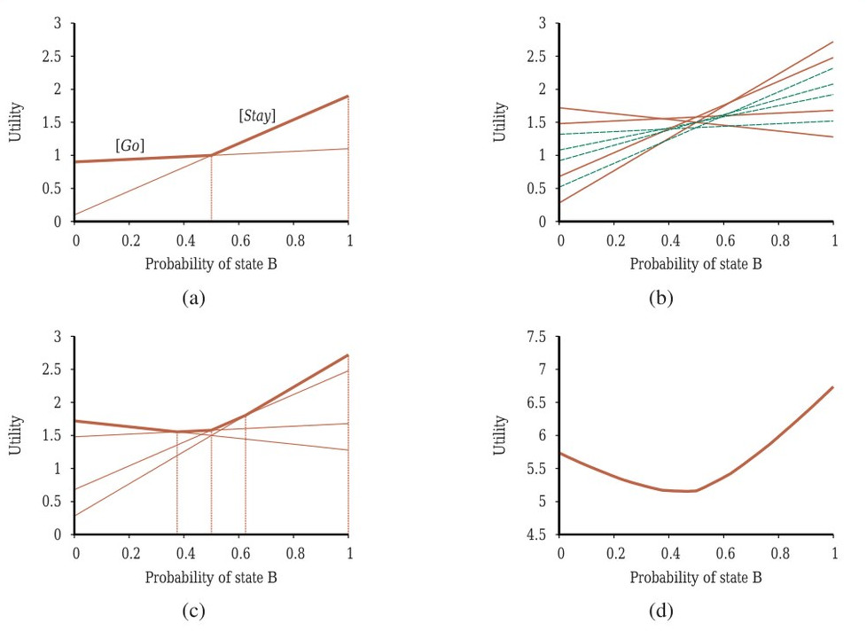
وقتی مطلوبیتهای αp(s) را برای همهٔ برنامههای شرطیِ p با عمقِ 1 در هر حالتِ فیزیکیِ s داریم، میتوانیم مطلوبیتها را برای برنامههای شرطیِ عمقِ 2 با درنظرگرفتنِ هر کنشِ اولِ ممکن، هر حسگذارِهٔ بعدیِ ممکن، و سپس هر راهِ انتخابِ برنامهٔ عمق-1 برای اجرا برای هر حسگذارِه محاسبه کنیم:
[Stay; if Percept=A then Stay else Stay]
[Stay; if Percept=A then Stay else Go]
[Go; if Percept=A then Stay else Stay]
...در مجموع هشت برنامهٔ متمایزِ عمق-2 هست، و مطلوبیتهایشان در شکل ۱۷.۱۵(ب) نشان داده شده. توجه کنید چهار تا از برنامهها، که بهصورتِ خطچین نشان داده شدهاند، در کلِ فضایِ باور زیربهینهاند—میگوییم این برنامهها «مسلط» (Dominated) هستند و دیگر لازم نیست در نظر گرفته شوند. چهار برنامهٔ مسلطنشده هست، که هر یک در ناحیهای خاص بهینه است، چنانکه در شکل ۱۷.۱۵(ج) نشان داده شده. نواحی، فضایِ حالتِ باور را افراز میکنند.
فرایند را برای عمقِ 3 تکرار میکنیم، و همینطور. بهطورِ کلی، فرض کنیم p برنامهٔ شرطیِ عمق-d باشد که کنشِ اولش a و زیربرنامهٔ عمق-(d−1) برای حسگذارِهٔ e برابر p.e باشد؛ آنگاه:
αp(s) = ∑s′ P(s′|s,a) [R(s,a,s′) + γ ∑e P(e|s′) αp.e(s′)] (17.18)این بازگشت بهطورِ طبیعی الگوریتمِ تکرارِ مقداری به ما میدهد، که در شکل ۱۷.۱۶ داده شده.
function POMDP-VALUE-ITERATION(pomdp, ǫ) returns a utility function
inputs: pomdp, a POMDP with states S, actions A(s), transition model P(s′|s,a),
sensor model P(e|s), rewards R(s), discount γ
ǫ, the maximum allowed error in the utility of any state
local variables: U, U′, sets of plans p with associated utility vectors αp
U′ ← a set containing only the empty plan [], with α[](s) = R(s)
repeat:
U ← U′
U′ ← the set of all plans consisting of an action and, for each possible next percept,
a plan in U, with utility vectors computed according to Equation (17.18)
U′ ← REMOVE-DOMINATED-PLANS(U′)
until MAX-DIFFERENCE(U, U′) ≤ ǫ(1−γ)/γ
return Uساختارِ الگوریتم و تحلیلِ خطایش شبیهِ الگوریتمِ پایهٔ تکرارِ مقدار در شکل ۱۷.۶ صفحهٔ ۵۷۳ است؛ تفاوتِ اصلی این است که بهجای محاسبهٔ یک عددِ مطلوبیت برای هر حالت، POMDP-VALUE-ITERATION مجموعهای از برنامههای مسلطنشده را با ابرصفحههای مطلوبیتشان نگه میدارد.
پیچیدگیِ الگوریتم عمدتاً به چند برنامه تولید میشود بستگی دارد. با |A| کنش و |E| مشاهدهٔ ممکن، |A|^O(|E|^(d−1)) برنامهٔ متمایزِ عمق-d هست. حتی برای جهانِ فروتنِ دوحالته با d = 8، این 2²⁵⁵ برنامه است. حذفِ برنامههای مسلط برای کاهشِ این رشدِ دوتاییِ نمایی ضروری است: شمارِ برنامههای مسلطنشده با d = 8 فقط ۱۴۴ است. تابعِ مطلوبیت برای این ۱۴۴ برنامه در شکل ۱۷.۱۵(د) نشان داده شده.
توجه کنید حالتهای باورِ میانی ارزشِ کمتری از حالتِ A و حالتِ B دارند، زیرا در حالتهای میانی عامل فاقدِ اطلاعاتِ لازم برای انتخابِ کنشِ خوب است. به همین دلیل است که اطلاعات در معنایِ تعریفشده در بخش ۱۶.۶ ارزش دارد و سیاستهای بهینه در POMDPها اغلب شاملِ کنشهای جمعآوریِ اطلاعاتاند.
گامِ REMOVE-DOMINATED-PLANS و آزمونِ MAX-DIFFERENCE معمولاً بهصورتِ برنامههای خطی پیادهسازی میشوند. با چنین تابعِ مطلوبیتی، سیاستِ اجراپذیری را میتوان با نگاهکردن به اینکه کدام ابرصفحه در هر حالتِ باورِ معینِ b بهینه است و اجرایِ نخستین کنشِ برنامهٔ متناظر، استخراج کرد. در شکل ۱۷.۱۵(د)، سیاستِ بهینهٔ متناظر همچنان همان سیاستِ برنامههای عمق-1 است: Stay وقتی b(B) > 0.5 و در غیرِ این صورت Go.
در عمل، الگوریتمِ تکرارِ مقدار در شکل ۱۷.۱۶ برای مسائلِ بزرگتر بهطرزِ مأیوسکنندهای ناکارآمد است—حتی POMDPِ 4×3 بسیار دشوار است. دلیلِ اصلی این است که با n برنامهٔ شرطیِ مسلطنشده در سطحِ d، الگوریتم |A|·n^|E| برنامهٔ شرطی در سطحِ d+1 میسازد قبل از حذفِ مسلطها. با حسگرِ چهاربیتی، |E| برابر 16 است و n میتواند در صدها باشد، پس این عملاً مأیوسکننده و نشدنی است. از زمانِ توسعهٔ این الگوریتم در دههٔ ۱۹۷۰، پیشرفتهای متعددی بوده، از جملهِ شکلهای کارآمدترِ تکرارِ مقدار و انواعِ مختلفی از الگوریتمهای تکرارِ سیاست. برخی از اینها در یادداشتهای پایانِ فصل بحث شدهاند. اما برای POMDPهای عمومی، یافتنِ سیاستهای بهینه بسیار دشوار است (در واقع PSPACE-سخت—یعنی واقعاً بسیار سخت). بخشِ بعد روشِ متفاوت و تقریبیِ دیگری برای حلِ POMDPها توصیف میکند، روشی مبتنی بر جستجوی نگاهبهجلو.
طراحیِ پایهٔ عاملِ POMDPِ برخط سرراست است: با حالتِ باورِ پیشینیِ معینی شروع میکند؛ بر اساسِ فرایندِ تأملِ متمرکز بر حالتِ باورِ کنونیاش کنشی انتخاب میکند؛ پس از عملکردن، مشاهدهای دریافت و حالتِ باورش را با الگوریتمِ فیلترکردن بهروزرسانی میکند؛ و فرایند تکرار میشود.
یکی از انتخابهای بدیهی برای فرایندِ تأمل، الگوریتمِ اکسپکتیمکس از بخش ۱۷.۲.۴ است، بهجز با حالتهای باور بهجای حالتهای فیزیکی بهعنوانِ گرههای تصمیم در درخت. گرههای شانس در درختِ POMDP شاخههایی دارند که با مشاهدههای ممکن برچسبگذاری شدهاند و به حالتِ باورِ بعدی میانجامند، با احتمالهای انتقالِ دادهشده توسط معادلهٔ (17.17). قطعهای از درختِ اکسپکتیمکسِ حالتِ باور برای POMDPِ 4×3 در شکل ۱۷.۱۷ نشان داده شده.
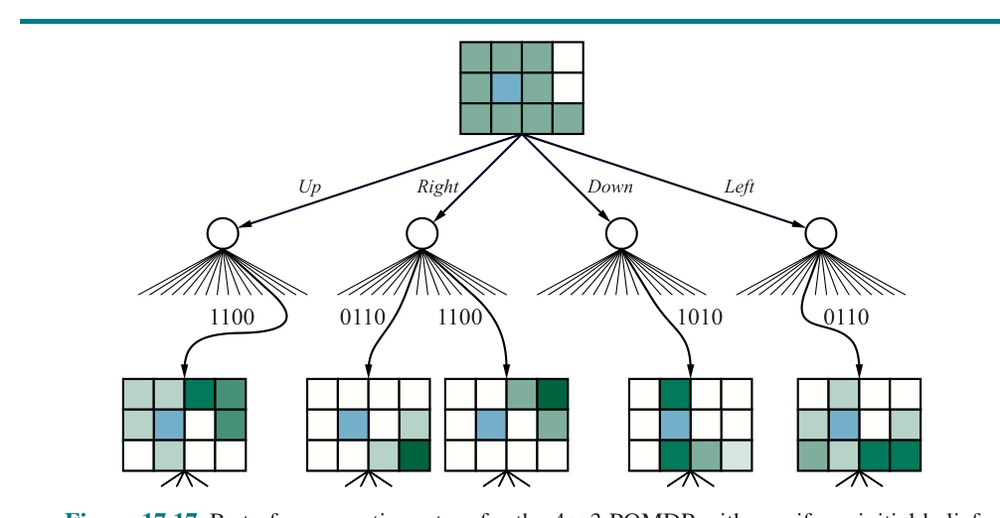
پیچیدگیِ زمانیِ جستجوی جامع تا عمقِ d برابر O(|A|ᵈ · |E|ᵈ) است، که در آن |A| شمارِ کنشهای موجود و |E| شمارِ حسگذارِههای ممکن است. (توجه کنید این بسیار کمتر از شمارِ برنامههای شرطیِ عمق-dِ ممکنِ تولیدشده توسط تکرارِ مقدار است.) مانندِ حالتِ قابل مشاهده، نمونهبرداری در گرههای شانس راهِ خوبی برای کاهشِ ضریبِ انشعاب بدونِ ازدستدادنِ دقتِ زیاد در تصمیمِ نهایی است. بدینترتیب، پیچیدگیِ تصمیمگیریِ تقریبیِ برخط در POMDPها ممکن است بهطورِ چشمگیری بدتر از MDPها نباشد. برای فضاهایِ حالتِ بسیار بزرگ، فیلترکردنِ دقیق ناشدنی است، پس عامل باید الگوریتمِ فیلترکردنِ تقریبی مانندِ فیلترِ ذرهای (صفحهٔ ۴۹۲ را ببینید) اجرا کند. سپس حالتهای باور در درختِ اکسپکتیمکس مجموعههایی از ذرات میشوند، نه توزیعهای احتمالِ دقیق. برای مسائلِ با افقهای بلند، همچنین ممکن است لازم باشد نوعِ پلِیاوتِ دوربردِ استفادهشده در الگوریتمِ UCT (شکل ۵.۱۱) را اجرا کنیم. ترکیبِ فیلترِ ذرهای و UCT اعمالشده بر POMDPها با نامِ «برنامهریزیِ مونتکارلویِ تا حدی قابل مشاهده» (Partially Observable Monte Carlo Planning) یا POMCP شناخته میشود. با بازنماییِ DDN برای مدل، الگوریتمِ POMCP، دستِکم در اصل، برای POMDPهای بسیار بزرگ و واقعگرایانه قابلِ اعمال است. جزئیاتِ الگوریتم در تمرین ۱۷.POMC کاوش شده. POMCP قادر به تولیدِ رفتارِ شایسته در POMDPِ 4×3 است. نمونهٔ کوتاهی (و تا حدی خوششانسانه) در شکل ۱۷.۱۸ نشان داده شده.
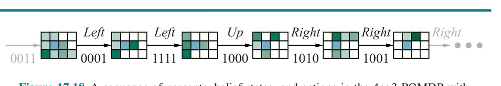
عاملهای POMDP مبتنی بر شبکههای تصمیمِ پویا و تصمیمگیریِ برخط نسبت به دیگر طراحیهای عاملِ سادهترِ ارائهشده در فصلهای قبلی مزایای متعددی دارند. بهطورِ خاص، آنها محیطهای تا حدی قابل مشاهده و تصادفی را مدیریت میکنند و میتوانند بهآسانی «برنامههای»شان را برای مدیریتِ شواهدِ غیرمنتظره تجدیدنظر کنند. با مدلهای حسگرِ مناسب، میتوانند خرابیِ حسگر را مدیریت کنند و برای جمعآوریِ اطلاعات برنامهریزی کنند. آنها تحتِ فشارِ زمان و در محیطهای پیچیده، با استفاده از فنونِ تقریبیِ گوناگون، «تخریبِ برازنده» (Graceful Degradation) نشان میدهند.
پس چه چیزی کم است؟ مانعِ اصلیِ استقرارِ دنیایِ واقعیِ چنین عاملهایی ناتوانی در تولیدِ رفتارِ موفق در مقیاسهای زمانیِ بلند است. پلِیاوتهای تصادفی یا نیمهتصادفی هیچ امیدی به کسبِ پاداشِ مثبت ندارند، مثلاً، در تکلیفِ چیدنِ میزِ شام، که ممکن است دهها میلیون کنشِ کنترلِ حرکتی بگیرد. به نظر میرسد لازم است برخی از ایدههای برنامهریزیِ سلسلهمراتبیِ توصیفشده در بخش ۱۱.۴ را قرض بگیریم. در زمانِ نوشتن، هنوز راههای رضایتبخش و کارآمدی برای اعمالِ این ایدهها در محیطهای تصادفیِ تا حدی قابل مشاهده نیست.
این فصل نشان میدهد چگونه از دانش دربارهٔ جهان برای تصمیمگیری استفاده کنیم، حتی وقتی پیامدهای کنش نامطمئناند و پاداشِ عملکردن ممکن است تا پس از گذشتنِ کنشهای بسیار به دست نیاید. نکاتِ اصلی بهصورتِ زیرند:
تئوریِ برنامهنویسیِ پویا توسط ریچارد بلمن (1957) ابداع شد. اصطلاحِ «فرایندِ تصمیمِ مارکوف» از کارِ هاوارد (1960) میآید. پایاننامهٔ دکترایِ رون هاوارد (1960) تکرارِ سیاست و ایدهٔ پاداشِ میانگین را برای حلِ مسائلِ افقِ نامتناهی معرفی کرد. چند نتیجهٔ اضافی توسط بلمن و دریفوس (1962) معرفی شد. استفاده از نگاشتهای انقباضی در تحلیلِ الگوریتمهای برنامهنویسیِ پویا از دناردو (1967) است. تکرارِ سیاستِ اصلاحشده از فان نونن (1976) و پوترمن و شین (1978) است. تکرارِ سیاستِ ناهمگام توسط ویلیامز و بیرد (1993) تحلیل شد، که کرانِ زیانِ سیاستِ معادلهٔ (17.13) را نیز اثبات کردند.
خانوادهٔ عمومیِ الگوریتمهای «جاروی اولویتبندیشده» (Prioritized Sweeping) هدفشان سرعتبخشیدن به همگرایی به سیاستهای بهینه با مرتبکردنِ اکتشافیِ محاسباتِ بهروزرسانیِ مقدار و سیاست است (مور و اتکسن، 1993؛ آندره و همکاران، 1998؛ وینگیت و سپی، 2005).
صورتبندیِ حلِ MDP بهصورتِ برنامهٔ خطی از دو گلینک (1960)، من (1960) و دپنو (1963) است. اگرچه برنامهنویسیِ خطی بهطورِ سنتی بهعنوانِ روشِ حلِ دقیقِ فروتر از برنامهنویسیِ پویا برای MDPها در نظر گرفته شده، د فاریاس و روی (2003) نشان میدهند میتوان از برنامهنویسیِ خطی و بازنماییِ خطیِ تابعِ مطلوبیت برای بهدستآوردنِ راهحلهای تقریبیِ قابلِاثباتِ خوب برای MDPهای بسیار بزرگ استفاده کرد.
پاپادیمیتریو و تسیتسیکلیس (1987) و لیتمن و همکاران (1995) نتایجِ عمومی دربارهٔ پیچیدگیِ محاسباتیِ MDPها فراهم میکنند. یینیو یه (2011) رابطهٔ میانِ تکرارِ سیاست و روشِ سیمپلکس برای برنامهنویسیِ خطی را تحلیل میکند و اثبات میکند برای γ ثابت، زمانِ اجرایِ تکرارِ سیاست در شمارِ حالتها و کنشها چندجملهای است.
کارِ بنیادینِ ساتون (1988) و واتکینز (1989) دربارهٔ روشهای یادگیریِ تقویتی برای حلِ MDPها نقشِ قابلِتوجهی در معرفیِ MDPها به جامعهٔ هوش مصنوعی داشت. (کارِ زودترِ وربوس (1977) حاوی ایدههای مشابهِ بسیاری بود، اما به همان میزان دنبال نشد.) پژوهشگرانِ هوش مصنوعی MDPها را در جهتِ بازنماییهای بیانیتر هل دادهاند که میتوانند مسائلِ بسیار بزرگتری را نسبت به بازنماییهای اتمیِ سنتیِ مبتنی بر ماتریسهای انتقال در خود جای دهند. ایدههای پایه برای معماریِ عاملی با استفاده از شبکههای تصمیمِ پویا توسط دین و کانازاوا (1989a) پیشنهاد شد. تاتمن و شاکتر (1990) نشان دادند چگونه الگوریتمهای برنامهنویسیِ پویا را روی مدلهای DDN اعمال کنیم. چند نویسنده ارتباطِ میانِ MDPها و مسائلِ برنامهریزیِ هوش مصنوعی را برقرار کردند و شکلهای احتمالاتیِ بازنماییِ فشردهٔ STRIPS را برای مدلهای انتقال توسعه دادند (ولمن، 1990b؛ کونیگ، 1991). کتابِ «برنامهریزی و کنترل» اثرِ دین و ولمن (1991) این ارتباط را با عمقِ زیاد کاوش میکند.
کارهای بعدی روی «MDPهای عاملی» (Factored MDPs؛ بوتیلیر و همکاران، 2000؛ کولر و پار، 2000؛ گستریَن و همکاران، 2003b) از بازنماییهای ساختیافته هم برای تابعِ مقدار و هم برای مدلِ انتقال استفاده میکنند، با بهبودهای قابلِاثبات در پیچیدگی. «MDPهای رابطهای» (Relational MDPs؛ بوتیلیر و همکاران، 2001؛ گستریَن و همکاران، 2003a) یک گام فراتر میروند و از بازنماییهای ساختیافته برای مدیریتِ حوزههای با اشیای مرتبطِ بسیار استفاده میکنند. «MDPها و POMDPهای جهانِ باز» (سریواستاوا و همکاران، 2014b) همچنین عدم قطعیت بر سرِ وجود و هویتِ اشیا و کنشها را اجازه میدهند.
نویسندگانِ بسیاری الگوریتمهای تقریبیِ برخط برای تصمیمگیری در MDPها توسعه دادهاند، که اغلب بهصراحت از رویکردهای قبلیِ هوش مصنوعی به جستجوی بلادرنگ و بازیکردن قرض میگیرند (وربوس، 1992؛ دین و همکاران، 1993؛ تاش و راسل، 1994). کارِ بارتو و همکاران (1995) روی RTDP (برنامهنویسیِ پویایِ بلادرنگ) چارچوبِ عمومیای برای فهمِ چنین الگوریتمهایی و ارتباطشان با یادگیریِ تقویتی و جستجوی اکتشافی فراهم کرد.
تحلیلِ اکسپکتیمکسِ عمقکراندار با نمونهبرداری در گرههای شانس از کرنز و همکاران (2002) است. الگوریتمِ UCT توصیفشده در فصل از کوچیس و سزپسواری (2006) است و از کارهای قبلی روی پلِیاوتهای تصادفی برای برآوردِ مقادیرِ حالتها قرض میگیرد (آبرامسون، 1990؛ بروگمان، 1993؛ چانگ و همکاران، 2005).
مسائلِ باندیت توسط تامسون (1933) معرفی شدند اما پس از جنگِ جهانیِ دوم از طریقِ کارِ هربرت رابینز (1952) به برجستگی رسیدند. برادت و همکاران (1956) نخستین نتایج را دربارهٔ قاعدههای توقف برای باندیتهای یکبازویی اثبات کردند، که سرانجام به نتایجِ پیشگامانهٔ جان گیتینز انجامید (گیتینز و جونز، 1974؛ گیتینز، 1989). کاتِهکیس و واینوت (1987) MDPِ راهاندازیِ دوباره را بهعنوانِ روشی برای محاسبهٔ شاخصهای گیتینز پیشنهاد کردند. متنِ بری و فریستدت (1985) تغییراتِ بسیاری بر مسئلهٔ پایه را پوشش میدهد، در حالی که متنِ برخطِ روشنِ فرگوسن (2001) مسائلِ باندیت را به مسائلِ توقف مرتبط میکند.
لای و رابینز (1985) مطالعهٔ پشیمانیِ مجانبیِ سیاستهای باندیتِ بهینه را آغاز کردند. اکتشافیِ UCB توسط آئر و همکاران (2002) معرفی و تحلیل شد. ابرفرایندهای باندیت (BSP) نخستین بار توسط نش (1973) مطالعه شدند اما تا حد زیادی در هوش مصنوعی ناشناخته ماندند. هادفیلد-منل و راسل (2015) الگوریتمِ کارآمدِ شاخهوبرگی را توصیف میکنند که قادر به حلِ BSPهای نسبتاً بزرگ است. مسائلِ انتخاب توسط بکهوفر (1954) معرفی شدند. هی و همکاران (2012) چارچوبِ صوریِ مسائلِ فراستدلال را توسعه دادند و نشان دادند نمونههای ساده به مسائلِ انتخاب نگاشت میشوند نه باندیت. آنها همچنین نتیجهٔ رضایتبخشی را اثبات کردند که هزینهٔ محاسباتیِ موردانتظارِ استراتژیِ محاسباتیِ بهینه هرگز از افزایشِ موردانتظارِ کیفیتِ تصمیم بیشتر نیست—هرچند مواردی هست که سیاستِ بهینه ممکن است، با احتمالی، مدتها پس از نقطهای که هر سودِ ممکنی مصرف شده به محاسبه ادامه دهد.
مشاهدهٔ اینکه MDPِ تا حدی قابل مشاهده را میتوان به MDPِ معمولی روی حالتهای باور تبدیل کرد از آستروم (1965) و آئوکی (1965) است. نخستین الگوریتمِ کامل برای راهحلِ دقیقِ POMDPها—اساساً الگوریتمِ تکرارِ مقدارِ ارائهشده در این فصل—توسط ادوارد ساندیک (1971) در پایاننامهٔ دکترایش پیشنهاد شد. (مقالهٔ ژورنالیِ بعدیِ اسمالوود و ساندیک (1973) حاوی برخی خطاهاست، اما قابلدسترستر است.) لاوجوی (1991) بیستوپنج سالِ نخستِ پژوهشِ POMDP را مرور کرد و به نتیجهگیریهای تا حدی بدبینانه دربارهٔ امکانپذیریِ حلِ مسائلِ بزرگ رسید.
نخستین مشارکتِ قابلِتوجه درونِ هوش مصنوعی الگوریتمِ Witness بود (کاساندرا و همکاران، 1994؛ کالبلینگ و همکاران، 1998)، نسخهٔ بهبودیافتهٔ تکرارِ مقدارِ POMDP. الگوریتمهای دیگر بهزودی دنبال شدند، از جملهِ رویکردی از هانسن (1998) که سیاست را بهصورتِ افزایشی در قالبِ خودکارِ متناهیِ حالتی میسازد که حالتهایش حالتهای باورِ ممکنِ عامل را تعریف میکنند. کارهای جدیدتر در هوش مصنوعی بر روشهای تکرارِ مقدارِ نقطهای (Point-Based) تمرکز کردهاند که، در هر تکرار، برنامههای شرطی و بردارهای α را برای مجموعهٔ متناهی از حالتهای باور تولید میکنند، نه برای کلِ فضایِ باور. لاوجوی (1991) چنین الگوریتمی را برای شبکهٔ ثابتی از نقاط پیشنهاد کرد، رویکردی که بونه (2002) نیز گرفت. مقالهٔ تأثیرگذارِ پینو و همکاران (2003) تولیدِ نقاطِ قابلِدسترس با شبیهسازیِ مسیرها بهشیوهای تا حدی حریصانه را پیشنهاد کرد؛ اسپان و ولاسیس (2005) مشاهده کردند فقط باید برای زیرمجموعهٔ کوچک و تصادفیانتخابشدهای از نقاط برنامه تولید کرد تا برنامههای تکرارِ قبلی برای همهٔ نقاطِ مجموعه بهبود یابد. شانی و همکاران (2013) این و دیگر پیشرفتها را در الگوریتمهای نقطهای مرور میکنند، که به راهحلهای خوبی برای مسائلِ با هزاران حالت انجامیدهاند. چون POMDPها PSPACE-سختاند (پاپادیمیتریو و تسیتسیکلیس، 1987)، پیشرفتِ بیشتر در روشهای راهحلِ آفلاین ممکن است مستلزم بهرهگیری از انواعِ ساختار در توابعِ مقدارِ ناشی از بازنماییِ عاملیِ مدل باشد.
رویکردِ برخط برای POMDPها—استفاده از جستجوی نگاهبهجلو برای انتخابِ کنش برای حالتِ باورِ کنونی—نخستین بار توسط ساتیا و لاو (1973) بررسی شد. استفاده از نمونهبرداری در گرههای شانس بهصورتِ تحلیلی توسط کرنز و همکاران (2000) و نگ و جوردن (2000) کاوش شد.
الگوریتمِ POMCP از سیلور و ونس (2011) است.
با توسعهٔ الگوریتمهای تقریبِ نسبتاً مؤثر برای POMDPها، استفاده از آنها بهعنوانِ مدل برای مسائلِ دنیایِ واقعی افزایش یافته، بهطورِ خاص در آموزش (رافرتی و همکاران، 2016)، سامانههای دیالوگ (یانگ و همکاران، 2013)، رباتیک (شیائو و همکاران، 2007؛ هوین و روی، 2009) و خودروهای خودران (فوربس و همکاران، 1995؛ بای و همکاران، 2015). کاربردِ مهمِ بزرگمقیاس «سامانهٔ اجتناب از برخوردِ هواییِ X» (ACAS X) است، که هواپیماها و پهپادها را از برخوردِ میانهٔ هوا بازمیدارد. سامانه از POMDPها با شبکههای عصبی برای تقریبِ تابع استفاده میکند. ACAS X در مقایسه با سامانهٔ قدیمیِ TCAS، که در دههٔ ۱۹۷۰ با فناوریِ سامانههای خبره ساخته شد، ایمنی را بهطورِ قابلِتوجهی بهبود میبخشد (کوچندر فر، 2015؛ جولیان و همکاران، 2018). تصمیمگیریِ پیچیده همچنین توسط اقتصاددانان و روانشناسان مطالعه شده. آنها مییابند تصمیمگیرندگان همیشه عقلایی نیستند و ممکن است دقیقاً همانگونه که مدلهای این فصل توصیف میکنند عمل نکنند. برای نمونه، وقتی انتخابی داده میشود، اکثریتِ مردم ۱۰۰ دلارِ امروز را بر تضمینِ ۲۰۰ دلار در دو سال ترجیح میدهند، اما همان مردم ۲۰۰ دلار در هشت سال را بر ۱۰۰ دلار در شش سال ترجیح میدهند. یکی از راههای تفسیرِ این نتیجه این است که مردم از پاداشهای افزایشیِ تنزیلشدهٔ نمایی استفاده نمیکنند؛ شاید از «پاداشِ هذلولی» (Hyperbolic Reward) استفاده میکنند (تابعِ هذلولی در کوتاهمدت تندتر از تابعِ واپاشیِ نمایی فرومیرود). این و دیگر تفسیرهای ممکن توسط روبینشتاین (2003) بحث شدهاند.
متنهای برتسکاس (1987) و پوترمن (1994) مقدمههایی دقیق و موشکافانه برای مسائلِ تصمیمِ ترتیبی و برنامهنویسیِ پویا فراهم میکنند. برتسکاس و تسیتسیکلیس (1996) شاملِ پوششِ یادگیریِ تقویتیاند. ساتون و بارتو (2018) زمینِ مشابهی را اما با سبکی در دسترستر پوشش میدهند. سیگو و بوفه (2010)، موسام و کولوبوف (2012) و کوچندر فر (2015) تصمیمگیریِ ترتیبی را از دیدگاهِ هوش مصنوعی پوشش میدهند. کریشنامورتی (2016) پوششِ کاملی از POMDPها فراهم میکند.
¹ همچنین میتوان از هزینههای c(s,a,s′) استفاده کرد، چنانکه در تعریفِ مسائلِ جستجو در فصل ۳ انجام دادیم. با این حال، استفاده از پاداشها در ادبیاتِ تصمیمهای ترتیبیِ تحتِ عدم قطعیت استاندارد است.
² در این فصل از U برای تابعِ مطلوبیت استفاده میکنیم (برای سازگاری با بقیهٔ کتاب)، اما بسیاری از آثار دربارهٔ MDPها بهجایش از V (برای value یعنی مقدار) استفاده میکنند.
³ اگرچه این بدیهی به نظر میرسد، برای سیاستهای افقِ متناهی یا برای راههای دیگرِ ترکیبِ پاداشها در طولِ زمان، مانندِ گرفتنِ max، برقرار نیست. اثبات مستقیماً از یکتاییِ تابعِ مطلوبیت روی حالتها نتیجه میشود، چنانکه در بخش ۱۷.۲.۱ نشان داده شده.
⁴ احتمالها احتمالهای فرایندِ بهروزرسانیِ بیزی با پیشینِ Beta(1,1) هستند (بخش ۲۰.۲.۵ را ببینید).
⁵ مدلِ حسگر همچنین میتواند به کنش و حالتِ پیامد بستگی داشته باشد، اما این تغییر بنیادین نیست.